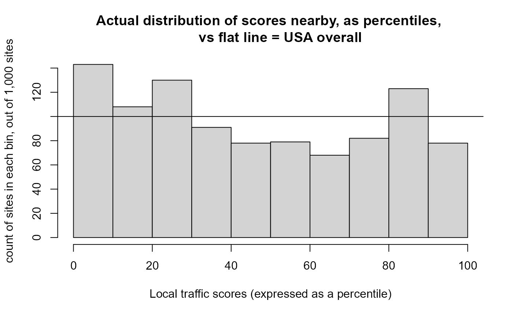

Key Functions
run_app() to launch the web app locally (to run in RStudio on a single computer rather than on a server)
ejamit() provides most results in just one function, and they can be viewed using ejam2report() and ejam2excel(). Sample input to ejamit() is in testpoints_10 and sample output is in testoutput_ejamit_10pts_1miles. ejamit() especially relies on getblocksnearby() and doaggregate():
getblocksnearby() takes a set of points (e.g., facilities) and finds the Census blocks near each. Sample input is in testpoints_100, and sample output is in testoutput_getblocksnearby_10pts_1miles
doaggregate() takes the list of blocks near each point, joins it to blockgroup indicators like from EJScreen, and aggregates at each buffered point as well as for the overall set of unique blocks (residents). Sample input is in testoutput_getblocksnearby_10pts_1miles and sample output is in testoutput_doaggregate_10pts_1miles
Key groups of functions
The EJAM package reference manual has a complete list of documented functions, grouped by category. There are several categories of functions listed there:
- The overall functions ejamit(), ejam2report(), ejam2excel()
- Specify Points by Lat/Lon
- Specify Facilities by ID
- Specify Facility Type
- Specify Places by Shapefile
- Specify Counties, etc./FIPS tools
- Blocks, Distances, Residents - e.g., getblocksnearby()
- Calculating and Aggregating
- Viewing Results
- Test Data
- Utilities for finding URL or API info
- etc.
Also see data(“EJAM”) and see ?dataload_from_pins() and usastats, statestats
POINTS & NEARBY RESIDENTS
EJAM offers a variety of ways to specify the places to be analyzed and compared. Once you specify some list of places, EJAM will analyze them as a whole (overall), and also individually so that you can compare places to each other.
Places analyzed and compared can be any of the following:
- Points, defining all residents within X miles of each point
- Polygons (from shapefiles), such as redlining zones, higher risk areas based on modeling, etc.
- Census Units such as Counties or other types of Census Units defined by FIPS code (e.g., Counties in one State)
Groups will be available in another type of analysis, not yet implemented. Groups will let you get statistics for each group, to compare categories of places. Whole groups of points/ polygons/ census areas will be treated as the units of analysis. This will allow you to define groups of points, for example, and get a summary for each group, such as residents near any of the facilities of one type. This enables comparison of categories of places, such as analyzing 3 types of facilities at once with results aggregated for each type, or comparing redlining zones grouped by grade, or comparing areas with some feature (poor air quality, or receiving grants, etc.) versus areas without that trait, all limited to one State or Region, for example.
To analyze points and the circular areas around each one, you can specify the points in two basic ways:
- A list of points defined by coordinates or by EPA ID numbers for each point
- All points that are the locations of EPA-regulated facilities of a certain type. The categories that can be used include the following:
- EPA Program (e.g., all greenhouse gas reporting facilities)
- Industry type, based on NAICS code (e.g., )
Specify points (where you want to center the circular buffers)
You can define locations as all residents within X miles of any one or more of the specified points, and you can define those points in a few ways. One way is to upload a table of coordinates – latitude and longitude for each point, one row per site, with columns called lat and lon (or some synonyms that work).
The simplest way to do that in the RStudio console is to do something
like x <- ejamit(radius=1), and it prompts you to upload
a spreadsheet with lat lon columns.
You can also specify a set of facilities by uploading their Registry
ID numbers in a table, or using other identifiers. For example, there is
a function latlon_from_programid() in the examples
below.
You can define circular buffers around a set of EPA-regulated facilities in a few other ways as well, such as by NAICS (or SIC) industry names or codes, EPA program covering the set of facilities (e.g., all greenhouse gas reporters), or a Clean Air Act MACT subpart.
by Industry (NAICS)
You can specify sites by NAICS, but it is important to note the FRS lacks NAICS info for many regulated facilities!
naics_from_any("paint and coating", children = T)
#> code n2 n3 n4 n5 n6 name
#> <num> <char> <char> <char> <char> <char> <char>
#> 1: 32551 32 325 3255 32551 32551 Paint and Coating Manufacturing
#> 2: 325510 32 325 3255 32551 325510 Paint and Coating Manufacturing
#> 3: 325510 32 325 3255 32551 325510 Paint and Coating Manufacturing
#> num_name
#> <char>
#> 1: 32551 - Paint and Coating Manufacturing
#> 2: 325510 - Paint and Coating Manufacturing
#> 3: 325510 - Paint and Coating Manufacturing
## note latlon_from_naics() requires the frs_by_naics dataset, which it tries to load on demand.
# head(latlon_from_naics(325510)) # has about 1,000 facilities
## All sectors with this phrase in their NAICS title
#
# x <- ejamit(frs_from_naics("paint and coating"), 1)See many more examples of working with NAICS, in a section below.
by Facility, using EPA Registry ID
# note frs_from_regid() and latlon_from_regid() require the frs dataset, which they try to load on demand.
frs_from_regid(c(110071293460, 110000333826))
## interactively upload file with table of REGISTRY_ID values
x <- latlon_from_regid(read_csv_or_xl()$REGISTRY_ID)
## and run through EJAM
y <- ejamit(latlon_from_regid(read_csv_or_xl()$REGISTRY_ID), radius = 1)
# # still debugging Island Areas validation here!by Facility, using EPA Program System ID
# note latlon_from_programid() requires access to the frs_by_programid dataset, which it tries to load on demand.
dataload_from_pins("frs_by_programid")
#> Connecting to Posit Connect 2024.01.0 at
#> <https://rstudio-connect.dmap-stage.aws.epa.gov>
#> Successfully connected to Posit Connect pins board.
#>
#> frs_by_programid - was already in memory (in specified envir), so local and/or server copies were not sought.
#> [1] "frs_by_programid"
if (exists("frs_by_programid")) {
latlon_from_programid(c("XJW000012435", "00768SRTRSROAD1"))
}
#> lat lon REGISTRY_ID program pgm_sys_id
#> <num> <num> <char> <char> <char>
#> 1: 48.39008 -122.50088 110071133925 RCRAINFO XJW000012435
#> 2: 18.06229 -66.85967 110000307855 TRIS 00768SRTRSROAD1by EPA Regulatory Program
# note latlon_from_programid() requires the frs and frs_by_programid datasets, which it tries to load on demand.
dataload_from_pins("frs_by_programid")
#> Connecting to Posit Connect 2024.01.0 at
#> <https://rstudio-connect.dmap-stage.aws.epa.gov>
#> Successfully connected to Posit Connect pins board.
#>
#> frs_by_programid - was already in memory (in specified envir), so local and/or server copies were not sought.
#> [1] "frs_by_programid"
if (exists("frs_by_programid")) {
## Map of over 10,000 facilities in FRS identified as in the E-Grid power plant database
pts <- latlon_from_program("EGRID")[, 1:4]
mapfast(pts)
## In just 1 State
pts[, ST := state_from_latlon(lat = lat, lon = lon)$ST]
mapfast(pts[ST == "TX", ], radius = 1)
## 10 largest programs (including State programs in the dataset)
head(cbind(Count.of.facilities = sort(table(frs_by_programid$program), decreasing = T)), 10)
## Largest Federal lists (many of the codes represent State databases)
epa_programs_counts <- frs_by_programid[, .N, by = "program"][order(N), ]
epa_programs_counts$fed = !grepl("^[A-Z]{2}[-]", as.vector(epa_programs_counts$program),1,3)
epa_programs_counts[fed == TRUE, ][order(-N), ][1:25, ]
}
#> Warning in state_from_latlon(lat = lat, lon = lon): Some latitude / longitude
#> were provided that are not found in any state
#> program N fed
#> <char> <int> <lgcl>
#> 1: RCRAINFO 517725 TRUE
#> 2: NPDES 394581 TRUE
#> 3: ICIS 156855 TRUE
#> 4: AIR 134115 TRUE
#> 5: FIS 122496 TRUE
#> 6: EIS 119792 TRUE
#> 7: AIRS/AFS 101075 TRUE
#> 8: OSHA-OIS 85069 TRUE
#> 9: NCDB 70782 TRUE
#> 10: ACES 65353 TRUE
#> 11: IDNR_EFD 45963 TRUE
#> 12: SFDW 43309 TRUE
#> 13: ACRES 35541 TRUE
#> 14: AZURITE 35140 TRUE
#> 15: FDM 34623 TRUE
#> 16: TRIS 33178 TRUE
#> 17: SIMS 26061 TRUE
#> 18: NDEQ 25599 TRUE
#> 19: PDS 20585 TRUE
#> 20: SSTS 15371 TRUE
#> 21: TSCA 12619 TRUE
#> 22: HWTS-DATAMART 12290 TRUE
#> 23: CEDRI 11731 TRUE
#> 24: SEMS 10986 TRUE
#> 25: EGRID 10615 TRUE
#> program N fedby MACT Subpart (hazardous air pollutant source category)
# note latlon_from_mactsubpart() requires the frs_by_mact dataset, which it tries to load on demand
dataload_from_pins("frs_by_mact")
#> Connecting to Posit Connect 2024.01.0 at
#> <https://rstudio-connect.dmap-stage.aws.epa.gov>
#> Successfully connected to Posit Connect pins board.
#>
#> frs_by_mact - was already in memory (in specified envir), so local and/or server copies were not sought.
#> [1] "frs_by_mact"
if (exists("frs_by_mact")) {
# Search by name of category
mact_table[grepl("ethylene", mact_table$title, ignore.case = T), ]
eto <- rbind(
latlon_from_mactsubpart("O" ),
latlon_from_mactsubpart("WWWWW")
)
# Map the category
mapfast(eto)
# Browse the full list of categories
# mact_table[ , c("N", "subpart", "title")]
# The 10 largest categories
tail(mact_table[order(mact_table$N), c("N", "subpart", "title")], 10)
# Many facilities lack latitude longitude information in this database
nrow(latlon_from_mactsubpart("A", include_if_no_latlon = TRUE))
nrow(latlon_from_mactsubpart("A", include_if_no_latlon = FALSE))
head(latlon_from_mactsubpart("OOOO"), 2)
}
#> Key: <subpart, programid>
#> programid subpart
#> <char> <char>
#> 1: 080000003800500001 OOOO
#> 2: 0900000006111R9011 OOOO
#> title lat
#> <char> <num>
#> 1: PRINTING, COATING AND DYEING OF FABRICS AND OTHER TEXTILES 47.97940
#> 2: PRINTING, COATING AND DYEING OF FABRICS AND OTHER TEXTILES 34.22082
#> lon REGISTRY_ID program
#> <num> <char> <char>
#> 1: -99.02064 110000825867 AIR
#> 2: -119.02272 110043415578 AIRWorking with NAICS Codes (Industry Codes)
NAICS Codes to Map or Analyze Facilities in one Industrial Sector
NAICS/industry categories
naics_categories()
#> Also see https://www.naics.com/search/
#> [,1]
#> 11 - Agriculture, Forestry, Fishing and Hunting 11
#> 21 - Mining, Quarrying, and Oil and Gas Extraction 21
#> 22 - Utilities 22
#> 23 - Construction 23
#> 42 - Wholesale Trade 42
#> 51 - Information 51
#> 52 - Finance and Insurance 52
#> 53 - Real Estate and Rental and Leasing 53
#> 54 - Professional, Scientific, and Technical Services 54
#> 55 - Management of Companies and Enterprises 55
#> 56 - Administrative and Support and Waste Management and Remediation Services 56
#> 61 - Educational Services 61
#> 62 - Health Care and Social Assistance 62
#> 71 - Arts, Entertainment, and Recreation 71
#> 72 - Accommodation and Food Services 72
#> 81 - Other Services (except Public Administration) 81
#> 92 - Public Administration 92
#> 31 - Manufacturing 31
#> 32 - Manufacturing 32
#> 33 - Manufacturing 33
#> 44 - Retail Trade 44
#> 45 - Retail Trade 45
#> 48 - Transportation and Warehousing 48
#> 49 - Transportation and Warehousing 49
naics_from_any(naics_categories(3))[order(name),.(name,code)][1:10,]
#> Also see https://www.naics.com/search/
#> name
#> <char>
#> 1: Accommodation
#> 2: Administration of Economic Programs
#> 3: Administration of Environmental Quality Programs
#> 4: Administration of Housing Programs, Urban Planning, and Community Development
#> 5: Administration of Human Resource Programs
#> 6: Administrative and Support Services
#> 7: Air Transportation
#> 8: Ambulatory Health Care Services
#> 9: Amusement, Gambling, and Recreation Industries
#> 10: Animal Production and Aquaculture
#> code
#> <num>
#> 1: 721
#> 2: 926
#> 3: 924
#> 4: 925
#> 5: 923
#> 6: 561
#> 7: 481
#> 8: 621
#> 9: 713
#> 10: 112
naics_from_any(naics_categories(3))[order(code),.(code,name)][1:10,]
#> Also see https://www.naics.com/search/
#> code name
#> <num> <char>
#> 1: 111 Crop Production
#> 2: 112 Animal Production and Aquaculture
#> 3: 113 Forestry and Logging
#> 4: 114 Fishing, Hunting and Trapping
#> 5: 115 Support Activities for Agriculture and Forestry
#> 6: 211 Oil and Gas Extraction
#> 7: 212 Mining (except Oil and Gas)
#> 8: 213 Support Activities for Mining
#> 9: 221 Utilities
#> 10: 236 Construction of Buildings
# See a data table of facilities in one industry
industryword <- "pulp"
head( frs_from_naics(naics_from_any(industryword)$code)[,1:4] )
#> Key: <REGISTRY_ID>
#> lat lon REGISTRY_ID PRIMARY_NAME
#> <num> <num> <char> <char>
#> 1: 42.60008 -72.37838 110000308612 ERVING PAPER MILLS
#> 2: 41.49085 -78.67752 110000330400 DOMTAR - JOHNSONBURG MILL
#> 3: 39.52191 -80.13012 110000344958 ND FAIRMONT LLC
#> 4: 35.21225 -77.11482 110000350478 INTERNATIONAL PAPER - NEW BERN MILL
#> 5: 39.55363 -84.30568 110000392076 CHENEY PULP AND PAPER CO
#> 6: 45.10800 -87.60700 110000412367 FIBREKQuick map of EPA-regulated facilities in one industrial category, which you can click on to see popup windows about sites.
# note frs_from_naics() requires the frs dataset, which it tries to load on demand.
dataload_from_pins("frs")
#> Connecting to Posit Connect 2024.01.0 at
#> <https://rstudio-connect.dmap-stage.aws.epa.gov>
#> Successfully connected to Posit Connect pins board.
#>
#> frs - was already in memory (in specified envir), so local and/or server copies were not sought.
#> [1] "frs"
if (exists("frs")) {
mapfast(frs_from_naics("smelt")) # may be slow the 1st time, if it loads frs dataset
}(but note that this FRS dataset lacks NAICS for most facilities!)
Table of facilities in an industry, plus links to each facility in ECHO and EJScreen
industryword <- "chemical manuf"
# industryword <- "smelt"
if (exists("frs")) {
mysites <- frs_from_naics(industryword, children = FALSE)[,1:5]
regids <- mysites$REGISTRY_ID
link1 <- url_echo_facility_webpage(regids, as_html = T)
link2 <- url_ejscreen_report(lat = mysites$lat, lon = mysites$lon, radius = 3, as_html = T)
link3 <- url_ejscreenmap(lat = mysites$lat, lon = mysites$lon, as_html = T)
# # same:
# my_industry <- naics_from_any("chemical manuf",children = F)[,.(code,name)]
# mysites <- frs_from_naics(my_industry$code)[,1:5]
mysites <- cbind(`ECHO report` = link1,
`EJScreen Report` = link2, `EJScreen Map` = link3,
mysites)
caption = paste0(nrow(mysites), ' sites have NAICS matching "', industryword, '"')
if (nrow(mysites) > 1500) {mysites <- mysites[1:1500, ]} # >2k rows is too much for client-side DataTables
cat(caption,'\n')
print(
DT::datatable(
mysites,
escape = FALSE, rownames = FALSE,
caption = caption,
filter = "top"
)[1:10, ]
)
}Map of facilities in an industry, plus popups with links to each facility in ECHO and EJScreen
mapfast(mysites)Search using industry codes or text in industry names
naics_from_any("plastics and rubber")
#> code n2 n3 n4 n5 n6
#> <num> <char> <char> <char> <char> <char>
#> 1: 326 32 326 326 326 326
#> name
#> <char>
#> 1: Plastics and Rubber Products Manufacturing
#> num_name
#> <char>
#> 1: 326 - Plastics and Rubber Products Manufacturing
naics_from_any(326)
#> code n2 n3 n4 n5 n6
#> <num> <char> <char> <char> <char> <char>
#> 1: 326 32 326 326 326 326
#> name
#> <char>
#> 1: Plastics and Rubber Products Manufacturing
#> num_name
#> <char>
#> 1: 326 - Plastics and Rubber Products Manufacturing
head(naics_from_any(326, children = T)[,.(code,name)])
#> code
#> <num>
#> 1: 326
#> 2: 3261
#> 3: 32611
#> 4: 326111
#> 5: 326112
#> 6: 326113
#> name
#> <char>
#> 1: Plastics and Rubber Products Manufacturing
#> 2: Plastics Product Manufacturing
#> 3: Plastics Packaging Materials and Unlaminated Film and Sheet Manufacturing
#> 4: Plastics Bag and Pouch Manufacturing
#> 5: Plastics Packaging Film and Sheet (including Laminated) Manufacturing
#> 6: Unlaminated Plastics Film and Sheet (except Packaging) Manufacturing
naics_from_any("pig")
#> code n2 n3 n4 n5 n6
#> <num> <char> <char> <char> <char> <char>
#> 1: 1122 11 112 1122 1122 1122
#> 2: 11221 11 112 1122 11221 11221
#> 3: 112210 11 112 1122 11221 112210
#> 4: 32513 32 325 3251 32513 32513
#> 5: 325130 32 325 3251 32513 325130
#> name
#> <char>
#> 1: Hog and Pig Farming
#> 2: Hog and Pig Farming
#> 3: Hog and Pig Farming
#> 4: Synthetic Dye and Pigment Manufacturing
#> 5: Synthetic Dye and Pigment Manufacturing
#> num_name
#> <char>
#> 1: 1122 - Hog and Pig Farming
#> 2: 11221 - Hog and Pig Farming
#> 3: 112210 - Hog and Pig Farming
#> 4: 32513 - Synthetic Dye and Pigment Manufacturing
#> 5: 325130 - Synthetic Dye and Pigment Manufacturing
naics_from_any("pig ") # space after g
#> code n2 n3 n4 n5 n6 name
#> <num> <char> <char> <char> <char> <char> <char>
#> 1: 1122 11 112 1122 1122 1122 Hog and Pig Farming
#> 2: 11221 11 112 1122 11221 11221 Hog and Pig Farming
#> 3: 112210 11 112 1122 11221 112210 Hog and Pig Farming
#> num_name
#> <char>
#> 1: 1122 - Hog and Pig Farming
#> 2: 11221 - Hog and Pig Farming
#> 3: 112210 - Hog and Pig Farming
# a OR b, a AND b, etc.
a = naics_from_any("plastics")
b = naics_from_any("rubber")
library(data.table)
#> Warning: package 'data.table' was built under R version 4.2.3
data.table::fintersect(a,b)[,.(name,code)] # a AND b
#> name code
#> <char> <num>
#> 1: Plastics and Rubber Products Manufacturing 326
#> 2: Rubber and Plastics Hoses and Belting Manufacturing 32622
#> 3: Rubber and Plastics Hoses and Belting Manufacturing 326220
head(data.table::funion(a,b)[,.(name,code)]) # a OR b
#> name
#> <char>
#> 1: Plastics Material and Resin Manufacturing
#> 2: Plastics and Rubber Products Manufacturing
#> 3: Plastics Product Manufacturing
#> 4: Plastics Packaging Materials and Unlaminated Film and Sheet Manufacturing
#> 5: Plastics Bag and Pouch Manufacturing
#> 6: Plastics Packaging Film and Sheet (including Laminated) Manufacturing
#> code
#> <num>
#> 1: 325211
#> 2: 326
#> 3: 3261
#> 4: 32611
#> 5: 326111
#> 6: 326112
# naics_subcodes_from_code(funion(a,b)[,code])[,.(name,code)] # plus children
head(naics_from_any(funion(a,b)[,code], children = T)[,.(name,code)] ) # same
#> name
#> <char>
#> 1: Plastics and Rubber Products Manufacturing
#> 2: Plastics Product Manufacturing
#> 3: Plastics Packaging Materials and Unlaminated Film and Sheet Manufacturing
#> 4: Plastics Bag and Pouch Manufacturing
#> 5: Plastics Packaging Film and Sheet (including Laminated) Manufacturing
#> 6: Unlaminated Plastics Film and Sheet (except Packaging) Manufacturing
#> code
#> <num>
#> 1: 326
#> 2: 3261
#> 3: 32611
#> 4: 326111
#> 5: 326112
#> 6: 326113A NAICS code can have many “children” or subcategories under it
NROW(naics_from_any("chem"))
#> [1] 20
# about 20
NROW(naics_from_any("chem", children = T))
#> [1] 113
# >100
NROW(frs_from_naics(naics_from_any("chem")$code))
#> [1] 4997
# a few thousand
NROW(frs_from_naics(naics_from_any("chem", children = T)$code))
#> [1] 13631
# >10,000SHAPEFILES
Polygons in shapefiles as the places to compare
You can upload polygons in a shapefile, and use EJAM to analyze them. See the Shiny app.
See shapefile_from_folder() and related functions.
# shp1 <- shapefile_from_gdbzip(system.file("testdata/shapes/portland.gdb.zip", package = "EJAM"))
# shapefile_from_folder()
# shapefile_filepaths_from_folder()
# shapefile_filepaths_valid()
# shapefile_from_filepaths()
# shapefile_from_gdbzip()
# shapefile_from_gdb()
# shapefile_clean()
# shapefile_from_sitepoints()
# shape_buffered_from_shapefile()
# shape_buffered_from_shapefile_points()FIPS CODES
Counties as the places to compare
You can compare places defined by FIPS code, such as a group of US Counties.
Compare all Counties in a State, using EJAM indicators
# Get FIPS of each county in Delaware
mystate <- "Delaware"
cfips <- fips_counties_from_statename(mystate)
## You could launch a web browser tab for each of the counties,
## to see each of the County reports from EJScreen, like this:
#
# sapply(url_ejscreen_report(areaid = cfips), browseURL)
## Analyze EJ stats for each county in the State
x <- ejamit(fips = cfips) # radius not used
DT::datatable(x$results_bysite, escape = F)
table_tall_from_overall(x$results_overall)
t(x$results_bysite[ , c(
'ejam_uniq_id', 'pop', names_d_subgroups_ratio_to_state_avg), with = F])
mapfastej_counties(x$results_bysite)
cnames <- fips2countyname(x$results_bysite$ejam_uniq_id)
#cnames <- c("Kent County", "New Castle County", "Sussex County")
#cnames <- gsub(" County", "", cnames)
barplot(x$results_bysite$pctlowinc, names.arg = cnames,
main = paste0('% Low Income by County in ', mystate))
# Another example
mystate <- "Maryland"
vname <- "% low income"
xmd <- ejamit(fips = fips_counties_from_statename(mystate))
ggblanket::gg_col(data = xmd$results_bysite,
y = pctlowinc,
x = ejam_uniq_id,
title = paste0(vname, ' by County in ', mystate),
y_title = vname
)
mapfastej_counties(xmd$results_bysite, 'state.pctile.pctlowinc')EXPLORING RESULTS
Site by site results in datatable format in RStudio viewer:
out2 <- testoutput_ejamit_100pts_1miles
DT::datatable(out2$results_bysite[1:30, ], escape = FALSE, rownames = FALSE)
# To see all 1,000 sites in table:
#DT::datatable(out2$results_bysite[1:1000, ], escape = FALSE, rownames = FALSE)Overall results for a few key indicators, as raw output in console:
out2 <- testoutput_ejamit_100pts_1miles
names(out2)
#> [1] "results_overall" "results_bysite"
#> [3] "results_bybg_people" "longnames"
#> [5] "count_of_blocks_near_multiple_sites" "results_summarized"
#> [7] "formatted"
cbind(overall = as.list( out2$results_overall[ , ..names_d]))
#> overall
#> Demog.Index 0.4375791
#> Demog.Index.Supp 0.1559613
#> pctlowinc 0.3273222
#> pctlingiso 0.07851435
#> pctunemployed 0.06273723
#> pctlths 0.132045
#> lowlifex 0.1791878
#> pctunder5 0.05773662
#> pctover64 0.1407173
#> pctmin 0.5478361
cbind(overall = as.list( out2$results_overall[ , ..names_d_subgroups]))
#> overall
#> pcthisp 0.2737942
#> pctnhba 0.1462381
#> pctnhaa 0.0866459
#> pctnhaiana 0.002500135
#> pctnhnhpia 0.001582896
#> pctnhotheralone 0.005025789
#> pctnhmulti 0.03204894
#> pctnhwa 0.4521639Overall results for the very long list of all indicators, as raw output in console:
x <- testoutput_ejamit_1000pts_1miles
out <- x$results_bysite
out <- setDF(copy(out))
ratio_benchmarks <- c(1.01, 1.50, 2, 3, 5, 10)
ratiodata <- out[, names_d_ratio_to_state_avg]
findings <- count_sites_with_n_high_scores(out) # long output to console !
#>
#> At 100% of these sites, at least 1 indicator is at least 10 times the statewide overall average.
#> At 100% of these sites, at least 1 indicator is at least 5 times the statewide overall average.
#> At 100% of these sites, at least 1 indicator is at least 3 times the statewide overall average.
#> At 100% of these sites, at least 1 indicator is at least 2 times the statewide overall average.
#> At 100% of these sites, at least 1 indicator is at least 1.5 times the statewide overall average.
#> At 100% of these sites, at least 1 indicator is at least 1.01 times the statewide overall average.
#>
#> At 100% of these sites, at least 2 indicators are at least 10 times the statewide overall average.
#> At 100% of these sites, at least 2 indicators are at least 5 times the statewide overall average.
#> At 100% of these sites, at least 2 indicators are at least 3 times the statewide overall average.
#> At 100% of these sites, at least 2 indicators are at least 2 times the statewide overall average.
#> At 100% of these sites, at least 2 indicators are at least 1.5 times the statewide overall average.
#> At 100% of these sites, at least 2 indicators are at least 1.01 times the statewide overall average.
#>
#> At 100% of these sites, at least 3 indicators are at least 10 times the statewide overall average.
#> At 100% of these sites, at least 3 indicators are at least 5 times the statewide overall average.
#> At 100% of these sites, at least 3 indicators are at least 3 times the statewide overall average.
#> At 100% of these sites, at least 3 indicators are at least 2 times the statewide overall average.
#> At 100% of these sites, at least 3 indicators are at least 1.5 times the statewide overall average.
#> At 100% of these sites, at least 3 indicators are at least 1.01 times the statewide overall average.
#>
#> At 100% of these sites, at least 4 indicators are at least 10 times the statewide overall average.
#> At 100% of these sites, at least 4 indicators are at least 5 times the statewide overall average.
#> At 100% of these sites, at least 4 indicators are at least 3 times the statewide overall average.
#> At 100% of these sites, at least 4 indicators are at least 2 times the statewide overall average.
#> At 100% of these sites, at least 4 indicators are at least 1.5 times the statewide overall average.
#> At 100% of these sites, at least 4 indicators are at least 1.01 times the statewide overall average.
#>
#> At 100% of these sites, at least 5 indicators are at least 10 times the statewide overall average.
#> At 100% of these sites, at least 5 indicators are at least 5 times the statewide overall average.
#> At 100% of these sites, at least 5 indicators are at least 3 times the statewide overall average.
#> At 100% of these sites, at least 5 indicators are at least 2 times the statewide overall average.
#> At 100% of these sites, at least 5 indicators are at least 1.5 times the statewide overall average.
#> At 100% of these sites, at least 5 indicators are at least 1.01 times the statewide overall average.
#>
#> At 100% of these sites, at least 6 indicators are at least 10 times the statewide overall average.
#> At 100% of these sites, at least 6 indicators are at least 5 times the statewide overall average.
#> At 100% of these sites, at least 6 indicators are at least 3 times the statewide overall average.
#> At 100% of these sites, at least 6 indicators are at least 2 times the statewide overall average.
#> At 100% of these sites, at least 6 indicators are at least 1.5 times the statewide overall average.
#> At 100% of these sites, at least 6 indicators are at least 1.01 times the statewide overall average.
#>
#> At 100% of these sites, at least 7 indicators are at least 10 times the statewide overall average.
#> At 100% of these sites, at least 7 indicators are at least 5 times the statewide overall average.
#> At 100% of these sites, at least 7 indicators are at least 3 times the statewide overall average.
#> At 100% of these sites, at least 7 indicators are at least 2 times the statewide overall average.
#> At 100% of these sites, at least 7 indicators are at least 1.5 times the statewide overall average.
#> At 100% of these sites, at least 7 indicators are at least 1.01 times the statewide overall average.
#>
#> At 100% of these sites, at least 8 indicators are at least 10 times the statewide overall average.
#> At 100% of these sites, at least 8 indicators are at least 5 times the statewide overall average.
#> At 100% of these sites, at least 8 indicators are at least 3 times the statewide overall average.
#> At 100% of these sites, at least 8 indicators are at least 2 times the statewide overall average.
#> At 100% of these sites, at least 8 indicators are at least 1.5 times the statewide overall average.
#> At 100% of these sites, at least 8 indicators are at least 1.01 times the statewide overall average.
#>
#> At 100% of these sites, at least 9 indicators are at least 10 times the statewide overall average.
#> At 100% of these sites, at least 9 indicators are at least 5 times the statewide overall average.
#> At 100% of these sites, at least 9 indicators are at least 3 times the statewide overall average.
#> At 100% of these sites, at least 9 indicators are at least 2 times the statewide overall average.
#> At 100% of these sites, at least 9 indicators are at least 1.5 times the statewide overall average.
#> At 100% of these sites, at least 9 indicators are at least 1.01 times the statewide overall average.
#>
#> At 100% of these sites, at least 10 indicators are at least 10 times the statewide overall average.
#> At 100% of these sites, at least 10 indicators are at least 5 times the statewide overall average.
#> At 100% of these sites, at least 10 indicators are at least 3 times the statewide overall average.
#> At 100% of these sites, at least 10 indicators are at least 2 times the statewide overall average.
#> At 100% of these sites, at least 10 indicators are at least 1.5 times the statewide overall average.
#> At 100% of these sites, at least 10 indicators are at least 1.01 times the statewide overall average.
#>
#> At 100% of these sites, at least 11 indicators are at least 10 times the statewide overall average.
#> At 100% of these sites, at least 11 indicators are at least 5 times the statewide overall average.
#> At 100% of these sites, at least 11 indicators are at least 3 times the statewide overall average.
#> At 100% of these sites, at least 11 indicators are at least 2 times the statewide overall average.
#> At 100% of these sites, at least 11 indicators are at least 1.5 times the statewide overall average.
#> At 100% of these sites, at least 11 indicators are at least 1.01 times the statewide overall average.
#>
#> At 100% of these sites, at least 12 indicators are at least 10 times the statewide overall average.
#> At 100% of these sites, at least 12 indicators are at least 5 times the statewide overall average.
#> At 100% of these sites, at least 12 indicators are at least 3 times the statewide overall average.
#> At 100% of these sites, at least 12 indicators are at least 2 times the statewide overall average.
#> At 100% of these sites, at least 12 indicators are at least 1.5 times the statewide overall average.
#> At 100% of these sites, at least 12 indicators are at least 1.01 times the statewide overall average.
#>
#> At 100% of these sites, at least 13 indicators are at least 10 times the statewide overall average.
#> At 100% of these sites, at least 13 indicators are at least 5 times the statewide overall average.
#> At 100% of these sites, at least 13 indicators are at least 3 times the statewide overall average.
#> At 100% of these sites, at least 13 indicators are at least 2 times the statewide overall average.
#> At 100% of these sites, at least 13 indicators are at least 1.5 times the statewide overall average.
#> At 100% of these sites, at least 13 indicators are at least 1.01 times the statewide overall average.
#>
#> At 99% of these sites, at least 14 indicators are at least 10 times the statewide overall average.
#> At 100% of these sites, at least 14 indicators are at least 5 times the statewide overall average.
#> At 100% of these sites, at least 14 indicators are at least 3 times the statewide overall average.
#> At 100% of these sites, at least 14 indicators are at least 2 times the statewide overall average.
#> At 100% of these sites, at least 14 indicators are at least 1.5 times the statewide overall average.
#> At 100% of these sites, at least 14 indicators are at least 1.01 times the statewide overall average.
#>
#> At 98% of these sites, at least 15 indicators are at least 10 times the statewide overall average.
#> At 100% of these sites, at least 15 indicators are at least 5 times the statewide overall average.
#> At 100% of these sites, at least 15 indicators are at least 3 times the statewide overall average.
#> At 100% of these sites, at least 15 indicators are at least 2 times the statewide overall average.
#> At 100% of these sites, at least 15 indicators are at least 1.5 times the statewide overall average.
#> At 100% of these sites, at least 15 indicators are at least 1.01 times the statewide overall average.
#>
#> At 98% of these sites, at least 16 indicators are at least 10 times the statewide overall average.
#> At 100% of these sites, at least 16 indicators are at least 5 times the statewide overall average.
#> At 100% of these sites, at least 16 indicators are at least 3 times the statewide overall average.
#> At 100% of these sites, at least 16 indicators are at least 2 times the statewide overall average.
#> At 100% of these sites, at least 16 indicators are at least 1.5 times the statewide overall average.
#> At 100% of these sites, at least 16 indicators are at least 1.01 times the statewide overall average.
#>
#> At 98% of these sites, at least 17 indicators are at least 10 times the statewide overall average.
#> At 99% of these sites, at least 17 indicators are at least 5 times the statewide overall average.
#> At 100% of these sites, at least 17 indicators are at least 3 times the statewide overall average.
#> At 100% of these sites, at least 17 indicators are at least 2 times the statewide overall average.
#> At 100% of these sites, at least 17 indicators are at least 1.5 times the statewide overall average.
#> At 100% of these sites, at least 17 indicators are at least 1.01 times the statewide overall average.
#>
#> At 98% of these sites, at least 18 indicators are at least 10 times the statewide overall average.
#> At 98% of these sites, at least 18 indicators are at least 5 times the statewide overall average.
#> At 99% of these sites, at least 18 indicators are at least 3 times the statewide overall average.
#> At 100% of these sites, at least 18 indicators are at least 2 times the statewide overall average.
#> At 100% of these sites, at least 18 indicators are at least 1.5 times the statewide overall average.
#> At 100% of these sites, at least 18 indicators are at least 1.01 times the statewide overall average.
#>
#> At 98% of these sites, at least 19 indicators are at least 10 times the statewide overall average.
#> At 98% of these sites, at least 19 indicators are at least 5 times the statewide overall average.
#> At 99% of these sites, at least 19 indicators are at least 3 times the statewide overall average.
#> At 99% of these sites, at least 19 indicators are at least 2 times the statewide overall average.
#> At 100% of these sites, at least 19 indicators are at least 1.5 times the statewide overall average.
#> At 100% of these sites, at least 19 indicators are at least 1.01 times the statewide overall average.
#>
#> At 98% of these sites, at least 20 indicators are at least 10 times the statewide overall average.
#> At 98% of these sites, at least 20 indicators are at least 5 times the statewide overall average.
#> At 98% of these sites, at least 20 indicators are at least 3 times the statewide overall average.
#> At 99% of these sites, at least 20 indicators are at least 2 times the statewide overall average.
#> At 99% of these sites, at least 20 indicators are at least 1.5 times the statewide overall average.
#> At 100% of these sites, at least 20 indicators are at least 1.01 times the statewide overall average.
#>
#> At 98% of these sites, at least 21 indicators are at least 10 times the statewide overall average.
#> At 98% of these sites, at least 21 indicators are at least 5 times the statewide overall average.
#> At 98% of these sites, at least 21 indicators are at least 3 times the statewide overall average.
#> At 98% of these sites, at least 21 indicators are at least 2 times the statewide overall average.
#> At 99% of these sites, at least 21 indicators are at least 1.5 times the statewide overall average.
#> At 99% of these sites, at least 21 indicators are at least 1.01 times the statewide overall average.
#>
#> At 98% of these sites, at least 22 indicators are at least 10 times the statewide overall average.
#> At 98% of these sites, at least 22 indicators are at least 5 times the statewide overall average.
#> At 98% of these sites, at least 22 indicators are at least 3 times the statewide overall average.
#> At 98% of these sites, at least 22 indicators are at least 2 times the statewide overall average.
#> At 98% of these sites, at least 22 indicators are at least 1.5 times the statewide overall average.
#> At 98% of these sites, at least 22 indicators are at least 1.01 times the statewide overall average.
#>
#> At 98% of these sites, at least 23 indicators are at least 10 times the statewide overall average.
#> At 98% of these sites, at least 23 indicators are at least 5 times the statewide overall average.
#> At 98% of these sites, at least 23 indicators are at least 3 times the statewide overall average.
#> At 98% of these sites, at least 23 indicators are at least 2 times the statewide overall average.
#> At 98% of these sites, at least 23 indicators are at least 1.5 times the statewide overall average.
#> At 98% of these sites, at least 23 indicators are at least 1.01 times the statewide overall average.
#>
#> At 98% of these sites, at least 24 indicators are at least 10 times the statewide overall average.
#> At 98% of these sites, at least 24 indicators are at least 5 times the statewide overall average.
#> At 98% of these sites, at least 24 indicators are at least 3 times the statewide overall average.
#> At 98% of these sites, at least 24 indicators are at least 2 times the statewide overall average.
#> At 98% of these sites, at least 24 indicators are at least 1.5 times the statewide overall average.
#> At 98% of these sites, at least 24 indicators are at least 1.01 times the statewide overall average.
#>
#> At 98% of these sites, at least 25 indicators are at least 10 times the statewide overall average.
#> At 98% of these sites, at least 25 indicators are at least 5 times the statewide overall average.
#> At 98% of these sites, at least 25 indicators are at least 3 times the statewide overall average.
#> At 98% of these sites, at least 25 indicators are at least 2 times the statewide overall average.
#> At 98% of these sites, at least 25 indicators are at least 1.5 times the statewide overall average.
#> At 98% of these sites, at least 25 indicators are at least 1.01 times the statewide overall average.
#>
#> At 98% of these sites, at least 26 indicators are at least 10 times the statewide overall average.
#> At 98% of these sites, at least 26 indicators are at least 5 times the statewide overall average.
#> At 98% of these sites, at least 26 indicators are at least 3 times the statewide overall average.
#> At 98% of these sites, at least 26 indicators are at least 2 times the statewide overall average.
#> At 98% of these sites, at least 26 indicators are at least 1.5 times the statewide overall average.
#> At 98% of these sites, at least 26 indicators are at least 1.01 times the statewide overall average.
#>
#> At 98% of these sites, at least 27 indicators are at least 10 times the statewide overall average.
#> At 98% of these sites, at least 27 indicators are at least 5 times the statewide overall average.
#> At 98% of these sites, at least 27 indicators are at least 3 times the statewide overall average.
#> At 98% of these sites, at least 27 indicators are at least 2 times the statewide overall average.
#> At 98% of these sites, at least 27 indicators are at least 1.5 times the statewide overall average.
#> At 98% of these sites, at least 27 indicators are at least 1.01 times the statewide overall average.
#>
#> At 98% of these sites, at least 28 indicators are at least 10 times the statewide overall average.
#> At 98% of these sites, at least 28 indicators are at least 5 times the statewide overall average.
#> At 98% of these sites, at least 28 indicators are at least 3 times the statewide overall average.
#> At 98% of these sites, at least 28 indicators are at least 2 times the statewide overall average.
#> At 98% of these sites, at least 28 indicators are at least 1.5 times the statewide overall average.
#> At 98% of these sites, at least 28 indicators are at least 1.01 times the statewide overall average.
#>
#> At 98% of these sites, at least 29 indicators are at least 10 times the statewide overall average.
#> At 98% of these sites, at least 29 indicators are at least 5 times the statewide overall average.
#> At 98% of these sites, at least 29 indicators are at least 3 times the statewide overall average.
#> At 98% of these sites, at least 29 indicators are at least 2 times the statewide overall average.
#> At 98% of these sites, at least 29 indicators are at least 1.5 times the statewide overall average.
#> At 98% of these sites, at least 29 indicators are at least 1.01 times the statewide overall average.
#>
#> At 98% of these sites, at least 30 indicators are at least 10 times the statewide overall average.
#> At 98% of these sites, at least 30 indicators are at least 5 times the statewide overall average.
#> At 98% of these sites, at least 30 indicators are at least 3 times the statewide overall average.
#> At 98% of these sites, at least 30 indicators are at least 2 times the statewide overall average.
#> At 98% of these sites, at least 30 indicators are at least 1.5 times the statewide overall average.
#> At 98% of these sites, at least 30 indicators are at least 1.01 times the statewide overall average.
#>
#> At 98% of these sites, at least 31 indicators are at least 10 times the statewide overall average.
#> At 98% of these sites, at least 31 indicators are at least 5 times the statewide overall average.
#> At 98% of these sites, at least 31 indicators are at least 3 times the statewide overall average.
#> At 98% of these sites, at least 31 indicators are at least 2 times the statewide overall average.
#> At 98% of these sites, at least 31 indicators are at least 1.5 times the statewide overall average.
#> At 98% of these sites, at least 31 indicators are at least 1.01 times the statewide overall average.
#>
#> At 98% of these sites, at least 32 indicators are at least 10 times the statewide overall average.
#> At 98% of these sites, at least 32 indicators are at least 5 times the statewide overall average.
#> At 98% of these sites, at least 32 indicators are at least 3 times the statewide overall average.
#> At 98% of these sites, at least 32 indicators are at least 2 times the statewide overall average.
#> At 98% of these sites, at least 32 indicators are at least 1.5 times the statewide overall average.
#> At 98% of these sites, at least 32 indicators are at least 1.01 times the statewide overall average.
#>
#> At 98% of these sites, at least 33 indicators are at least 10 times the statewide overall average.
#> At 98% of these sites, at least 33 indicators are at least 5 times the statewide overall average.
#> At 98% of these sites, at least 33 indicators are at least 3 times the statewide overall average.
#> At 98% of these sites, at least 33 indicators are at least 2 times the statewide overall average.
#> At 98% of these sites, at least 33 indicators are at least 1.5 times the statewide overall average.
#> At 98% of these sites, at least 33 indicators are at least 1.01 times the statewide overall average.
#>
#> At 98% of these sites, at least 34 indicators are at least 10 times the statewide overall average.
#> At 98% of these sites, at least 34 indicators are at least 5 times the statewide overall average.
#> At 98% of these sites, at least 34 indicators are at least 3 times the statewide overall average.
#> At 98% of these sites, at least 34 indicators are at least 2 times the statewide overall average.
#> At 98% of these sites, at least 34 indicators are at least 1.5 times the statewide overall average.
#> At 98% of these sites, at least 34 indicators are at least 1.01 times the statewide overall average.
#>
#> At 98% of these sites, at least 35 indicators are at least 10 times the statewide overall average.
#> At 98% of these sites, at least 35 indicators are at least 5 times the statewide overall average.
#> At 98% of these sites, at least 35 indicators are at least 3 times the statewide overall average.
#> At 98% of these sites, at least 35 indicators are at least 2 times the statewide overall average.
#> At 98% of these sites, at least 35 indicators are at least 1.5 times the statewide overall average.
#> At 98% of these sites, at least 35 indicators are at least 1.01 times the statewide overall average.
#>
#> At 98% of these sites, at least 36 indicators are at least 10 times the statewide overall average.
#> At 98% of these sites, at least 36 indicators are at least 5 times the statewide overall average.
#> At 98% of these sites, at least 36 indicators are at least 3 times the statewide overall average.
#> At 98% of these sites, at least 36 indicators are at least 2 times the statewide overall average.
#> At 98% of these sites, at least 36 indicators are at least 1.5 times the statewide overall average.
#> At 98% of these sites, at least 36 indicators are at least 1.01 times the statewide overall average.
#>
#> At 98% of these sites, at least 37 indicators are at least 10 times the statewide overall average.
#> At 98% of these sites, at least 37 indicators are at least 5 times the statewide overall average.
#> At 98% of these sites, at least 37 indicators are at least 3 times the statewide overall average.
#> At 98% of these sites, at least 37 indicators are at least 2 times the statewide overall average.
#> At 98% of these sites, at least 37 indicators are at least 1.5 times the statewide overall average.
#> At 98% of these sites, at least 37 indicators are at least 1.01 times the statewide overall average.
#>
#> At 98% of these sites, at least 38 indicators are at least 10 times the statewide overall average.
#> At 98% of these sites, at least 38 indicators are at least 5 times the statewide overall average.
#> At 98% of these sites, at least 38 indicators are at least 3 times the statewide overall average.
#> At 98% of these sites, at least 38 indicators are at least 2 times the statewide overall average.
#> At 98% of these sites, at least 38 indicators are at least 1.5 times the statewide overall average.
#> At 98% of these sites, at least 38 indicators are at least 1.01 times the statewide overall average.
#>
#> At 98% of these sites, at least 39 indicators are at least 10 times the statewide overall average.
#> At 98% of these sites, at least 39 indicators are at least 5 times the statewide overall average.
#> At 98% of these sites, at least 39 indicators are at least 3 times the statewide overall average.
#> At 98% of these sites, at least 39 indicators are at least 2 times the statewide overall average.
#> At 98% of these sites, at least 39 indicators are at least 1.5 times the statewide overall average.
#> At 98% of these sites, at least 39 indicators are at least 1.01 times the statewide overall average.
#>
#> At 98% of these sites, at least 40 indicators are at least 10 times the statewide overall average.
#> At 98% of these sites, at least 40 indicators are at least 5 times the statewide overall average.
#> At 98% of these sites, at least 40 indicators are at least 3 times the statewide overall average.
#> At 98% of these sites, at least 40 indicators are at least 2 times the statewide overall average.
#> At 98% of these sites, at least 40 indicators are at least 1.5 times the statewide overall average.
#> At 98% of these sites, at least 40 indicators are at least 1.01 times the statewide overall average.
#>
#> At 98% of these sites, at least 41 indicators are at least 10 times the statewide overall average.
#> At 98% of these sites, at least 41 indicators are at least 5 times the statewide overall average.
#> At 98% of these sites, at least 41 indicators are at least 3 times the statewide overall average.
#> At 98% of these sites, at least 41 indicators are at least 2 times the statewide overall average.
#> At 98% of these sites, at least 41 indicators are at least 1.5 times the statewide overall average.
#> At 98% of these sites, at least 41 indicators are at least 1.01 times the statewide overall average.
#>
#> At 98% of these sites, at least 42 indicators are at least 10 times the statewide overall average.
#> At 98% of these sites, at least 42 indicators are at least 5 times the statewide overall average.
#> At 98% of these sites, at least 42 indicators are at least 3 times the statewide overall average.
#> At 98% of these sites, at least 42 indicators are at least 2 times the statewide overall average.
#> At 98% of these sites, at least 42 indicators are at least 1.5 times the statewide overall average.
#> At 98% of these sites, at least 42 indicators are at least 1.01 times the statewide overall average.
#>
#> At 98% of these sites, at least 43 indicators are at least 10 times the statewide overall average.
#> At 98% of these sites, at least 43 indicators are at least 5 times the statewide overall average.
#> At 98% of these sites, at least 43 indicators are at least 3 times the statewide overall average.
#> At 98% of these sites, at least 43 indicators are at least 2 times the statewide overall average.
#> At 98% of these sites, at least 43 indicators are at least 1.5 times the statewide overall average.
#> At 98% of these sites, at least 43 indicators are at least 1.01 times the statewide overall average.
#>
#> At 98% of these sites, at least 44 indicators are at least 10 times the statewide overall average.
#> At 98% of these sites, at least 44 indicators are at least 5 times the statewide overall average.
#> At 98% of these sites, at least 44 indicators are at least 3 times the statewide overall average.
#> At 98% of these sites, at least 44 indicators are at least 2 times the statewide overall average.
#> At 98% of these sites, at least 44 indicators are at least 1.5 times the statewide overall average.
#> At 98% of these sites, at least 44 indicators are at least 1.01 times the statewide overall average.
#>
#> At 98% of these sites, at least 45 indicators are at least 10 times the statewide overall average.
#> At 98% of these sites, at least 45 indicators are at least 5 times the statewide overall average.
#> At 98% of these sites, at least 45 indicators are at least 3 times the statewide overall average.
#> At 98% of these sites, at least 45 indicators are at least 2 times the statewide overall average.
#> At 98% of these sites, at least 45 indicators are at least 1.5 times the statewide overall average.
#> At 98% of these sites, at least 45 indicators are at least 1.01 times the statewide overall average.
#>
#> At 98% of these sites, at least 46 indicators are at least 10 times the statewide overall average.
#> At 98% of these sites, at least 46 indicators are at least 5 times the statewide overall average.
#> At 98% of these sites, at least 46 indicators are at least 3 times the statewide overall average.
#> At 98% of these sites, at least 46 indicators are at least 2 times the statewide overall average.
#> At 98% of these sites, at least 46 indicators are at least 1.5 times the statewide overall average.
#> At 98% of these sites, at least 46 indicators are at least 1.01 times the statewide overall average.
#>
#> At 98% of these sites, at least 47 indicators are at least 10 times the statewide overall average.
#> At 98% of these sites, at least 47 indicators are at least 5 times the statewide overall average.
#> At 98% of these sites, at least 47 indicators are at least 3 times the statewide overall average.
#> At 98% of these sites, at least 47 indicators are at least 2 times the statewide overall average.
#> At 98% of these sites, at least 47 indicators are at least 1.5 times the statewide overall average.
#> At 98% of these sites, at least 47 indicators are at least 1.01 times the statewide overall average.
#>
#> At 98% of these sites, at least 48 indicators are at least 10 times the statewide overall average.
#> At 98% of these sites, at least 48 indicators are at least 5 times the statewide overall average.
#> At 98% of these sites, at least 48 indicators are at least 3 times the statewide overall average.
#> At 98% of these sites, at least 48 indicators are at least 2 times the statewide overall average.
#> At 98% of these sites, at least 48 indicators are at least 1.5 times the statewide overall average.
#> At 98% of these sites, at least 48 indicators are at least 1.01 times the statewide overall average.
#>
#> At 98% of these sites, at least 49 indicators are at least 10 times the statewide overall average.
#> At 98% of these sites, at least 49 indicators are at least 5 times the statewide overall average.
#> At 98% of these sites, at least 49 indicators are at least 3 times the statewide overall average.
#> At 98% of these sites, at least 49 indicators are at least 2 times the statewide overall average.
#> At 98% of these sites, at least 49 indicators are at least 1.5 times the statewide overall average.
#> At 98% of these sites, at least 49 indicators are at least 1.01 times the statewide overall average.
#>
#> At 98% of these sites, at least 50 indicators are at least 10 times the statewide overall average.
#> At 98% of these sites, at least 50 indicators are at least 5 times the statewide overall average.
#> At 98% of these sites, at least 50 indicators are at least 3 times the statewide overall average.
#> At 98% of these sites, at least 50 indicators are at least 2 times the statewide overall average.
#> At 98% of these sites, at least 50 indicators are at least 1.5 times the statewide overall average.
#> At 98% of these sites, at least 50 indicators are at least 1.01 times the statewide overall average.
#>
#> At 98% of these sites, at least 51 indicators are at least 10 times the statewide overall average.
#> At 98% of these sites, at least 51 indicators are at least 5 times the statewide overall average.
#> At 98% of these sites, at least 51 indicators are at least 3 times the statewide overall average.
#> At 98% of these sites, at least 51 indicators are at least 2 times the statewide overall average.
#> At 98% of these sites, at least 51 indicators are at least 1.5 times the statewide overall average.
#> At 98% of these sites, at least 51 indicators are at least 1.01 times the statewide overall average.
#>
#> At 98% of these sites, at least 52 indicators are at least 10 times the statewide overall average.
#> At 98% of these sites, at least 52 indicators are at least 5 times the statewide overall average.
#> At 98% of these sites, at least 52 indicators are at least 3 times the statewide overall average.
#> At 98% of these sites, at least 52 indicators are at least 2 times the statewide overall average.
#> At 98% of these sites, at least 52 indicators are at least 1.5 times the statewide overall average.
#> At 98% of these sites, at least 52 indicators are at least 1.01 times the statewide overall average.
#>
#> At 98% of these sites, at least 53 indicators are at least 10 times the statewide overall average.
#> At 98% of these sites, at least 53 indicators are at least 5 times the statewide overall average.
#> At 98% of these sites, at least 53 indicators are at least 3 times the statewide overall average.
#> At 98% of these sites, at least 53 indicators are at least 2 times the statewide overall average.
#> At 98% of these sites, at least 53 indicators are at least 1.5 times the statewide overall average.
#> At 98% of these sites, at least 53 indicators are at least 1.01 times the statewide overall average.
#>
#> At 98% of these sites, at least 54 indicators are at least 10 times the statewide overall average.
#> At 98% of these sites, at least 54 indicators are at least 5 times the statewide overall average.
#> At 98% of these sites, at least 54 indicators are at least 3 times the statewide overall average.
#> At 98% of these sites, at least 54 indicators are at least 2 times the statewide overall average.
#> At 98% of these sites, at least 54 indicators are at least 1.5 times the statewide overall average.
#> At 98% of these sites, at least 54 indicators are at least 1.01 times the statewide overall average.
#>
#> At 98% of these sites, at least 55 indicators are at least 10 times the statewide overall average.
#> At 98% of these sites, at least 55 indicators are at least 5 times the statewide overall average.
#> At 98% of these sites, at least 55 indicators are at least 3 times the statewide overall average.
#> At 98% of these sites, at least 55 indicators are at least 2 times the statewide overall average.
#> At 98% of these sites, at least 55 indicators are at least 1.5 times the statewide overall average.
#> At 98% of these sites, at least 55 indicators are at least 1.01 times the statewide overall average.
#>
#> At 98% of these sites, at least 56 indicators are at least 10 times the statewide overall average.
#> At 98% of these sites, at least 56 indicators are at least 5 times the statewide overall average.
#> At 98% of these sites, at least 56 indicators are at least 3 times the statewide overall average.
#> At 98% of these sites, at least 56 indicators are at least 2 times the statewide overall average.
#> At 98% of these sites, at least 56 indicators are at least 1.5 times the statewide overall average.
#> At 98% of these sites, at least 56 indicators are at least 1.01 times the statewide overall average.
#>
#> At 98% of these sites, at least 57 indicators are at least 10 times the statewide overall average.
#> At 98% of these sites, at least 57 indicators are at least 5 times the statewide overall average.
#> At 98% of these sites, at least 57 indicators are at least 3 times the statewide overall average.
#> At 98% of these sites, at least 57 indicators are at least 2 times the statewide overall average.
#> At 98% of these sites, at least 57 indicators are at least 1.5 times the statewide overall average.
#> At 98% of these sites, at least 57 indicators are at least 1.01 times the statewide overall average.
#>
#> At 98% of these sites, at least 58 indicators are at least 10 times the statewide overall average.
#> At 98% of these sites, at least 58 indicators are at least 5 times the statewide overall average.
#> At 98% of these sites, at least 58 indicators are at least 3 times the statewide overall average.
#> At 98% of these sites, at least 58 indicators are at least 2 times the statewide overall average.
#> At 98% of these sites, at least 58 indicators are at least 1.5 times the statewide overall average.
#> At 98% of these sites, at least 58 indicators are at least 1.01 times the statewide overall average.
#>
#> At 98% of these sites, at least 59 indicators are at least 10 times the statewide overall average.
#> At 98% of these sites, at least 59 indicators are at least 5 times the statewide overall average.
#> At 98% of these sites, at least 59 indicators are at least 3 times the statewide overall average.
#> At 98% of these sites, at least 59 indicators are at least 2 times the statewide overall average.
#> At 98% of these sites, at least 59 indicators are at least 1.5 times the statewide overall average.
#> At 98% of these sites, at least 59 indicators are at least 1.01 times the statewide overall average.
#>
#> At 98% of these sites, at least 60 indicators are at least 10 times the statewide overall average.
#> At 98% of these sites, at least 60 indicators are at least 5 times the statewide overall average.
#> At 98% of these sites, at least 60 indicators are at least 3 times the statewide overall average.
#> At 98% of these sites, at least 60 indicators are at least 2 times the statewide overall average.
#> At 98% of these sites, at least 60 indicators are at least 1.5 times the statewide overall average.
#> At 98% of these sites, at least 60 indicators are at least 1.01 times the statewide overall average.
#>
#> At 98% of these sites, at least 61 indicators are at least 10 times the statewide overall average.
#> At 98% of these sites, at least 61 indicators are at least 5 times the statewide overall average.
#> At 98% of these sites, at least 61 indicators are at least 3 times the statewide overall average.
#> At 98% of these sites, at least 61 indicators are at least 2 times the statewide overall average.
#> At 98% of these sites, at least 61 indicators are at least 1.5 times the statewide overall average.
#> At 98% of these sites, at least 61 indicators are at least 1.01 times the statewide overall average.
#>
#> At 98% of these sites, at least 62 indicators are at least 10 times the statewide overall average.
#> At 98% of these sites, at least 62 indicators are at least 5 times the statewide overall average.
#> At 98% of these sites, at least 62 indicators are at least 3 times the statewide overall average.
#> At 98% of these sites, at least 62 indicators are at least 2 times the statewide overall average.
#> At 98% of these sites, at least 62 indicators are at least 1.5 times the statewide overall average.
#> At 98% of these sites, at least 62 indicators are at least 1.01 times the statewide overall average.
#>
#> At 98% of these sites, at least 63 indicators are at least 10 times the statewide overall average.
#> At 98% of these sites, at least 63 indicators are at least 5 times the statewide overall average.
#> At 98% of these sites, at least 63 indicators are at least 3 times the statewide overall average.
#> At 98% of these sites, at least 63 indicators are at least 2 times the statewide overall average.
#> At 98% of these sites, at least 63 indicators are at least 1.5 times the statewide overall average.
#> At 98% of these sites, at least 63 indicators are at least 1.01 times the statewide overall average.
#>
#> At 98% of these sites, at least 64 indicators are at least 10 times the statewide overall average.
#> At 98% of these sites, at least 64 indicators are at least 5 times the statewide overall average.
#> At 98% of these sites, at least 64 indicators are at least 3 times the statewide overall average.
#> At 98% of these sites, at least 64 indicators are at least 2 times the statewide overall average.
#> At 98% of these sites, at least 64 indicators are at least 1.5 times the statewide overall average.
#> At 98% of these sites, at least 64 indicators are at least 1.01 times the statewide overall average.
#>
#> At 98% of these sites, at least 65 indicators are at least 10 times the statewide overall average.
#> At 98% of these sites, at least 65 indicators are at least 5 times the statewide overall average.
#> At 98% of these sites, at least 65 indicators are at least 3 times the statewide overall average.
#> At 98% of these sites, at least 65 indicators are at least 2 times the statewide overall average.
#> At 98% of these sites, at least 65 indicators are at least 1.5 times the statewide overall average.
#> At 98% of these sites, at least 65 indicators are at least 1.01 times the statewide overall average.
#>
#> At 98% of these sites, at least 66 indicators are at least 10 times the statewide overall average.
#> At 98% of these sites, at least 66 indicators are at least 5 times the statewide overall average.
#> At 98% of these sites, at least 66 indicators are at least 3 times the statewide overall average.
#> At 98% of these sites, at least 66 indicators are at least 2 times the statewide overall average.
#> At 98% of these sites, at least 66 indicators are at least 1.5 times the statewide overall average.
#> At 98% of these sites, at least 66 indicators are at least 1.01 times the statewide overall average.
#>
#> At 98% of these sites, at least 67 indicators are at least 10 times the statewide overall average.
#> At 98% of these sites, at least 67 indicators are at least 5 times the statewide overall average.
#> At 98% of these sites, at least 67 indicators are at least 3 times the statewide overall average.
#> At 98% of these sites, at least 67 indicators are at least 2 times the statewide overall average.
#> At 98% of these sites, at least 67 indicators are at least 1.5 times the statewide overall average.
#> At 98% of these sites, at least 67 indicators are at least 1.01 times the statewide overall average.
#>
#> At 98% of these sites, at least 68 indicators are at least 10 times the statewide overall average.
#> At 98% of these sites, at least 68 indicators are at least 5 times the statewide overall average.
#> At 98% of these sites, at least 68 indicators are at least 3 times the statewide overall average.
#> At 98% of these sites, at least 68 indicators are at least 2 times the statewide overall average.
#> At 98% of these sites, at least 68 indicators are at least 1.5 times the statewide overall average.
#> At 98% of these sites, at least 68 indicators are at least 1.01 times the statewide overall average.
#>
#> At 98% of these sites, at least 69 indicators are at least 10 times the statewide overall average.
#> At 98% of these sites, at least 69 indicators are at least 5 times the statewide overall average.
#> At 98% of these sites, at least 69 indicators are at least 3 times the statewide overall average.
#> At 98% of these sites, at least 69 indicators are at least 2 times the statewide overall average.
#> At 98% of these sites, at least 69 indicators are at least 1.5 times the statewide overall average.
#> At 98% of these sites, at least 69 indicators are at least 1.01 times the statewide overall average.
#>
#> At 98% of these sites, at least 70 indicators are at least 10 times the statewide overall average.
#> At 98% of these sites, at least 70 indicators are at least 5 times the statewide overall average.
#> At 98% of these sites, at least 70 indicators are at least 3 times the statewide overall average.
#> At 98% of these sites, at least 70 indicators are at least 2 times the statewide overall average.
#> At 98% of these sites, at least 70 indicators are at least 1.5 times the statewide overall average.
#> At 98% of these sites, at least 70 indicators are at least 1.01 times the statewide overall average.
#>
#> At 98% of these sites, at least 71 indicators are at least 10 times the statewide overall average.
#> At 98% of these sites, at least 71 indicators are at least 5 times the statewide overall average.
#> At 98% of these sites, at least 71 indicators are at least 3 times the statewide overall average.
#> At 98% of these sites, at least 71 indicators are at least 2 times the statewide overall average.
#> At 98% of these sites, at least 71 indicators are at least 1.5 times the statewide overall average.
#> At 98% of these sites, at least 71 indicators are at least 1.01 times the statewide overall average.
#>
#> At 97% of these sites, at least 72 indicators are at least 10 times the statewide overall average.
#> At 98% of these sites, at least 72 indicators are at least 5 times the statewide overall average.
#> At 98% of these sites, at least 72 indicators are at least 3 times the statewide overall average.
#> At 98% of these sites, at least 72 indicators are at least 2 times the statewide overall average.
#> At 98% of these sites, at least 72 indicators are at least 1.5 times the statewide overall average.
#> At 98% of these sites, at least 72 indicators are at least 1.01 times the statewide overall average.
#>
#> At 97% of these sites, at least 73 indicators are at least 10 times the statewide overall average.
#> At 98% of these sites, at least 73 indicators are at least 5 times the statewide overall average.
#> At 98% of these sites, at least 73 indicators are at least 3 times the statewide overall average.
#> At 98% of these sites, at least 73 indicators are at least 2 times the statewide overall average.
#> At 98% of these sites, at least 73 indicators are at least 1.5 times the statewide overall average.
#> At 98% of these sites, at least 73 indicators are at least 1.01 times the statewide overall average.
#>
#> At 97% of these sites, at least 74 indicators are at least 10 times the statewide overall average.
#> At 98% of these sites, at least 74 indicators are at least 5 times the statewide overall average.
#> At 98% of these sites, at least 74 indicators are at least 3 times the statewide overall average.
#> At 98% of these sites, at least 74 indicators are at least 2 times the statewide overall average.
#> At 98% of these sites, at least 74 indicators are at least 1.5 times the statewide overall average.
#> At 98% of these sites, at least 74 indicators are at least 1.01 times the statewide overall average.
#>
#> At 97% of these sites, at least 75 indicators are at least 10 times the statewide overall average.
#> At 98% of these sites, at least 75 indicators are at least 5 times the statewide overall average.
#> At 98% of these sites, at least 75 indicators are at least 3 times the statewide overall average.
#> At 98% of these sites, at least 75 indicators are at least 2 times the statewide overall average.
#> At 98% of these sites, at least 75 indicators are at least 1.5 times the statewide overall average.
#> At 98% of these sites, at least 75 indicators are at least 1.01 times the statewide overall average.
#>
#> At 97% of these sites, at least 76 indicators are at least 10 times the statewide overall average.
#> At 98% of these sites, at least 76 indicators are at least 5 times the statewide overall average.
#> At 98% of these sites, at least 76 indicators are at least 3 times the statewide overall average.
#> At 98% of these sites, at least 76 indicators are at least 2 times the statewide overall average.
#> At 98% of these sites, at least 76 indicators are at least 1.5 times the statewide overall average.
#> At 98% of these sites, at least 76 indicators are at least 1.01 times the statewide overall average.
#>
#> At 97% of these sites, at least 77 indicators are at least 10 times the statewide overall average.
#> At 98% of these sites, at least 77 indicators are at least 5 times the statewide overall average.
#> At 98% of these sites, at least 77 indicators are at least 3 times the statewide overall average.
#> At 98% of these sites, at least 77 indicators are at least 2 times the statewide overall average.
#> At 98% of these sites, at least 77 indicators are at least 1.5 times the statewide overall average.
#> At 98% of these sites, at least 77 indicators are at least 1.01 times the statewide overall average.
#>
#> At 97% of these sites, at least 78 indicators are at least 10 times the statewide overall average.
#> At 98% of these sites, at least 78 indicators are at least 5 times the statewide overall average.
#> At 98% of these sites, at least 78 indicators are at least 3 times the statewide overall average.
#> At 98% of these sites, at least 78 indicators are at least 2 times the statewide overall average.
#> At 98% of these sites, at least 78 indicators are at least 1.5 times the statewide overall average.
#> At 98% of these sites, at least 78 indicators are at least 1.01 times the statewide overall average.
#>
#> At 97% of these sites, at least 79 indicators are at least 10 times the statewide overall average.
#> At 98% of these sites, at least 79 indicators are at least 5 times the statewide overall average.
#> At 98% of these sites, at least 79 indicators are at least 3 times the statewide overall average.
#> At 98% of these sites, at least 79 indicators are at least 2 times the statewide overall average.
#> At 98% of these sites, at least 79 indicators are at least 1.5 times the statewide overall average.
#> At 98% of these sites, at least 79 indicators are at least 1.01 times the statewide overall average.
#>
#> At 97% of these sites, at least 80 indicators are at least 10 times the statewide overall average.
#> At 98% of these sites, at least 80 indicators are at least 5 times the statewide overall average.
#> At 98% of these sites, at least 80 indicators are at least 3 times the statewide overall average.
#> At 98% of these sites, at least 80 indicators are at least 2 times the statewide overall average.
#> At 98% of these sites, at least 80 indicators are at least 1.5 times the statewide overall average.
#> At 98% of these sites, at least 80 indicators are at least 1.01 times the statewide overall average.
#>
#> At 97% of these sites, at least 81 indicators are at least 10 times the statewide overall average.
#> At 98% of these sites, at least 81 indicators are at least 5 times the statewide overall average.
#> At 98% of these sites, at least 81 indicators are at least 3 times the statewide overall average.
#> At 98% of these sites, at least 81 indicators are at least 2 times the statewide overall average.
#> At 98% of these sites, at least 81 indicators are at least 1.5 times the statewide overall average.
#> At 98% of these sites, at least 81 indicators are at least 1.01 times the statewide overall average.
#>
#> At 97% of these sites, at least 82 indicators are at least 10 times the statewide overall average.
#> At 98% of these sites, at least 82 indicators are at least 5 times the statewide overall average.
#> At 98% of these sites, at least 82 indicators are at least 3 times the statewide overall average.
#> At 98% of these sites, at least 82 indicators are at least 2 times the statewide overall average.
#> At 98% of these sites, at least 82 indicators are at least 1.5 times the statewide overall average.
#> At 98% of these sites, at least 82 indicators are at least 1.01 times the statewide overall average.
#>
#> At 97% of these sites, at least 83 indicators are at least 10 times the statewide overall average.
#> At 98% of these sites, at least 83 indicators are at least 5 times the statewide overall average.
#> At 98% of these sites, at least 83 indicators are at least 3 times the statewide overall average.
#> At 98% of these sites, at least 83 indicators are at least 2 times the statewide overall average.
#> At 98% of these sites, at least 83 indicators are at least 1.5 times the statewide overall average.
#> At 98% of these sites, at least 83 indicators are at least 1.01 times the statewide overall average.
#>
#> At 97% of these sites, at least 84 indicators are at least 10 times the statewide overall average.
#> At 98% of these sites, at least 84 indicators are at least 5 times the statewide overall average.
#> At 98% of these sites, at least 84 indicators are at least 3 times the statewide overall average.
#> At 98% of these sites, at least 84 indicators are at least 2 times the statewide overall average.
#> At 98% of these sites, at least 84 indicators are at least 1.5 times the statewide overall average.
#> At 98% of these sites, at least 84 indicators are at least 1.01 times the statewide overall average.
#>
#> At 97% of these sites, at least 85 indicators are at least 10 times the statewide overall average.
#> At 98% of these sites, at least 85 indicators are at least 5 times the statewide overall average.
#> At 98% of these sites, at least 85 indicators are at least 3 times the statewide overall average.
#> At 98% of these sites, at least 85 indicators are at least 2 times the statewide overall average.
#> At 98% of these sites, at least 85 indicators are at least 1.5 times the statewide overall average.
#> At 98% of these sites, at least 85 indicators are at least 1.01 times the statewide overall average.
#>
#> At 97% of these sites, at least 86 indicators are at least 10 times the statewide overall average.
#> At 98% of these sites, at least 86 indicators are at least 5 times the statewide overall average.
#> At 98% of these sites, at least 86 indicators are at least 3 times the statewide overall average.
#> At 98% of these sites, at least 86 indicators are at least 2 times the statewide overall average.
#> At 98% of these sites, at least 86 indicators are at least 1.5 times the statewide overall average.
#> At 98% of these sites, at least 86 indicators are at least 1.01 times the statewide overall average.
#>
#> At 97% of these sites, at least 87 indicators are at least 10 times the statewide overall average.
#> At 98% of these sites, at least 87 indicators are at least 5 times the statewide overall average.
#> At 98% of these sites, at least 87 indicators are at least 3 times the statewide overall average.
#> At 98% of these sites, at least 87 indicators are at least 2 times the statewide overall average.
#> At 98% of these sites, at least 87 indicators are at least 1.5 times the statewide overall average.
#> At 98% of these sites, at least 87 indicators are at least 1.01 times the statewide overall average.
#>
#> At 97% of these sites, at least 88 indicators are at least 10 times the statewide overall average.
#> At 98% of these sites, at least 88 indicators are at least 5 times the statewide overall average.
#> At 98% of these sites, at least 88 indicators are at least 3 times the statewide overall average.
#> At 98% of these sites, at least 88 indicators are at least 2 times the statewide overall average.
#> At 98% of these sites, at least 88 indicators are at least 1.5 times the statewide overall average.
#> At 98% of these sites, at least 88 indicators are at least 1.01 times the statewide overall average.
#>
#> At 97% of these sites, at least 89 indicators are at least 10 times the statewide overall average.
#> At 98% of these sites, at least 89 indicators are at least 5 times the statewide overall average.
#> At 98% of these sites, at least 89 indicators are at least 3 times the statewide overall average.
#> At 98% of these sites, at least 89 indicators are at least 2 times the statewide overall average.
#> At 98% of these sites, at least 89 indicators are at least 1.5 times the statewide overall average.
#> At 98% of these sites, at least 89 indicators are at least 1.01 times the statewide overall average.
#>
#> At 96% of these sites, at least 90 indicators are at least 10 times the statewide overall average.
#> At 98% of these sites, at least 90 indicators are at least 5 times the statewide overall average.
#> At 98% of these sites, at least 90 indicators are at least 3 times the statewide overall average.
#> At 98% of these sites, at least 90 indicators are at least 2 times the statewide overall average.
#> At 98% of these sites, at least 90 indicators are at least 1.5 times the statewide overall average.
#> At 98% of these sites, at least 90 indicators are at least 1.01 times the statewide overall average.
#>
#> At 96% of these sites, at least 91 indicators are at least 10 times the statewide overall average.
#> At 98% of these sites, at least 91 indicators are at least 5 times the statewide overall average.
#> At 98% of these sites, at least 91 indicators are at least 3 times the statewide overall average.
#> At 98% of these sites, at least 91 indicators are at least 2 times the statewide overall average.
#> At 98% of these sites, at least 91 indicators are at least 1.5 times the statewide overall average.
#> At 98% of these sites, at least 91 indicators are at least 1.01 times the statewide overall average.
#>
#> At 96% of these sites, at least 92 indicators are at least 10 times the statewide overall average.
#> At 98% of these sites, at least 92 indicators are at least 5 times the statewide overall average.
#> At 98% of these sites, at least 92 indicators are at least 3 times the statewide overall average.
#> At 98% of these sites, at least 92 indicators are at least 2 times the statewide overall average.
#> At 98% of these sites, at least 92 indicators are at least 1.5 times the statewide overall average.
#> At 98% of these sites, at least 92 indicators are at least 1.01 times the statewide overall average.
#>
#> At 96% of these sites, at least 93 indicators are at least 10 times the statewide overall average.
#> At 98% of these sites, at least 93 indicators are at least 5 times the statewide overall average.
#> At 98% of these sites, at least 93 indicators are at least 3 times the statewide overall average.
#> At 98% of these sites, at least 93 indicators are at least 2 times the statewide overall average.
#> At 98% of these sites, at least 93 indicators are at least 1.5 times the statewide overall average.
#> At 98% of these sites, at least 93 indicators are at least 1.01 times the statewide overall average.
#>
#> At 96% of these sites, at least 94 indicators are at least 10 times the statewide overall average.
#> At 98% of these sites, at least 94 indicators are at least 5 times the statewide overall average.
#> At 98% of these sites, at least 94 indicators are at least 3 times the statewide overall average.
#> At 98% of these sites, at least 94 indicators are at least 2 times the statewide overall average.
#> At 98% of these sites, at least 94 indicators are at least 1.5 times the statewide overall average.
#> At 98% of these sites, at least 94 indicators are at least 1.01 times the statewide overall average.
#>
#> At 96% of these sites, at least 95 indicators are at least 10 times the statewide overall average.
#> At 98% of these sites, at least 95 indicators are at least 5 times the statewide overall average.
#> At 98% of these sites, at least 95 indicators are at least 3 times the statewide overall average.
#> At 98% of these sites, at least 95 indicators are at least 2 times the statewide overall average.
#> At 98% of these sites, at least 95 indicators are at least 1.5 times the statewide overall average.
#> At 98% of these sites, at least 95 indicators are at least 1.01 times the statewide overall average.
#>
#> At 95% of these sites, at least 96 indicators are at least 10 times the statewide overall average.
#> At 97% of these sites, at least 96 indicators are at least 5 times the statewide overall average.
#> At 98% of these sites, at least 96 indicators are at least 3 times the statewide overall average.
#> At 98% of these sites, at least 96 indicators are at least 2 times the statewide overall average.
#> At 98% of these sites, at least 96 indicators are at least 1.5 times the statewide overall average.
#> At 98% of these sites, at least 96 indicators are at least 1.01 times the statewide overall average.
#>
#> At 95% of these sites, at least 97 indicators are at least 10 times the statewide overall average.
#> At 97% of these sites, at least 97 indicators are at least 5 times the statewide overall average.
#> At 98% of these sites, at least 97 indicators are at least 3 times the statewide overall average.
#> At 98% of these sites, at least 97 indicators are at least 2 times the statewide overall average.
#> At 98% of these sites, at least 97 indicators are at least 1.5 times the statewide overall average.
#> At 98% of these sites, at least 97 indicators are at least 1.01 times the statewide overall average.
#>
#> At 95% of these sites, at least 98 indicators are at least 10 times the statewide overall average.
#> At 97% of these sites, at least 98 indicators are at least 5 times the statewide overall average.
#> At 98% of these sites, at least 98 indicators are at least 3 times the statewide overall average.
#> At 98% of these sites, at least 98 indicators are at least 2 times the statewide overall average.
#> At 98% of these sites, at least 98 indicators are at least 1.5 times the statewide overall average.
#> At 98% of these sites, at least 98 indicators are at least 1.01 times the statewide overall average.
#>
#> At 95% of these sites, at least 99 indicators are at least 10 times the statewide overall average.
#> At 97% of these sites, at least 99 indicators are at least 5 times the statewide overall average.
#> At 98% of these sites, at least 99 indicators are at least 3 times the statewide overall average.
#> At 98% of these sites, at least 99 indicators are at least 2 times the statewide overall average.
#> At 98% of these sites, at least 99 indicators are at least 1.5 times the statewide overall average.
#> At 98% of these sites, at least 99 indicators are at least 1.01 times the statewide overall average.
#>
#> At 95% of these sites, at least 100 indicators are at least 10 times the statewide overall average.
#> At 97% of these sites, at least 100 indicators are at least 5 times the statewide overall average.
#> At 98% of these sites, at least 100 indicators are at least 3 times the statewide overall average.
#> At 98% of these sites, at least 100 indicators are at least 2 times the statewide overall average.
#> At 98% of these sites, at least 100 indicators are at least 1.5 times the statewide overall average.
#> At 98% of these sites, at least 100 indicators are at least 1.01 times the statewide overall average.
#>
#> At 94% of these sites, at least 101 indicators are at least 10 times the statewide overall average.
#> At 97% of these sites, at least 101 indicators are at least 5 times the statewide overall average.
#> At 98% of these sites, at least 101 indicators are at least 3 times the statewide overall average.
#> At 98% of these sites, at least 101 indicators are at least 2 times the statewide overall average.
#> At 98% of these sites, at least 101 indicators are at least 1.5 times the statewide overall average.
#> At 98% of these sites, at least 101 indicators are at least 1.01 times the statewide overall average.
#>
#> At 94% of these sites, at least 102 indicators are at least 10 times the statewide overall average.
#> At 97% of these sites, at least 102 indicators are at least 5 times the statewide overall average.
#> At 98% of these sites, at least 102 indicators are at least 3 times the statewide overall average.
#> At 98% of these sites, at least 102 indicators are at least 2 times the statewide overall average.
#> At 98% of these sites, at least 102 indicators are at least 1.5 times the statewide overall average.
#> At 98% of these sites, at least 102 indicators are at least 1.01 times the statewide overall average.
#>
#> At 94% of these sites, at least 103 indicators are at least 10 times the statewide overall average.
#> At 97% of these sites, at least 103 indicators are at least 5 times the statewide overall average.
#> At 98% of these sites, at least 103 indicators are at least 3 times the statewide overall average.
#> At 98% of these sites, at least 103 indicators are at least 2 times the statewide overall average.
#> At 98% of these sites, at least 103 indicators are at least 1.5 times the statewide overall average.
#> At 98% of these sites, at least 103 indicators are at least 1.01 times the statewide overall average.
#>
#> At 94% of these sites, at least 104 indicators are at least 10 times the statewide overall average.
#> At 97% of these sites, at least 104 indicators are at least 5 times the statewide overall average.
#> At 98% of these sites, at least 104 indicators are at least 3 times the statewide overall average.
#> At 98% of these sites, at least 104 indicators are at least 2 times the statewide overall average.
#> At 98% of these sites, at least 104 indicators are at least 1.5 times the statewide overall average.
#> At 98% of these sites, at least 104 indicators are at least 1.01 times the statewide overall average.
#>
#> At 94% of these sites, at least 105 indicators are at least 10 times the statewide overall average.
#> At 97% of these sites, at least 105 indicators are at least 5 times the statewide overall average.
#> At 98% of these sites, at least 105 indicators are at least 3 times the statewide overall average.
#> At 98% of these sites, at least 105 indicators are at least 2 times the statewide overall average.
#> At 98% of these sites, at least 105 indicators are at least 1.5 times the statewide overall average.
#> At 98% of these sites, at least 105 indicators are at least 1.01 times the statewide overall average.
#>
#> At 93% of these sites, at least 106 indicators are at least 10 times the statewide overall average.
#> At 97% of these sites, at least 106 indicators are at least 5 times the statewide overall average.
#> At 98% of these sites, at least 106 indicators are at least 3 times the statewide overall average.
#> At 98% of these sites, at least 106 indicators are at least 2 times the statewide overall average.
#> At 98% of these sites, at least 106 indicators are at least 1.5 times the statewide overall average.
#> At 98% of these sites, at least 106 indicators are at least 1.01 times the statewide overall average.
#>
#> At 93% of these sites, at least 107 indicators are at least 10 times the statewide overall average.
#> At 97% of these sites, at least 107 indicators are at least 5 times the statewide overall average.
#> At 98% of these sites, at least 107 indicators are at least 3 times the statewide overall average.
#> At 98% of these sites, at least 107 indicators are at least 2 times the statewide overall average.
#> At 98% of these sites, at least 107 indicators are at least 1.5 times the statewide overall average.
#> At 98% of these sites, at least 107 indicators are at least 1.01 times the statewide overall average.
#>
#> At 93% of these sites, at least 108 indicators are at least 10 times the statewide overall average.
#> At 97% of these sites, at least 108 indicators are at least 5 times the statewide overall average.
#> At 98% of these sites, at least 108 indicators are at least 3 times the statewide overall average.
#> At 98% of these sites, at least 108 indicators are at least 2 times the statewide overall average.
#> At 98% of these sites, at least 108 indicators are at least 1.5 times the statewide overall average.
#> At 98% of these sites, at least 108 indicators are at least 1.01 times the statewide overall average.
#>
#> At 93% of these sites, at least 109 indicators are at least 10 times the statewide overall average.
#> At 97% of these sites, at least 109 indicators are at least 5 times the statewide overall average.
#> At 98% of these sites, at least 109 indicators are at least 3 times the statewide overall average.
#> At 98% of these sites, at least 109 indicators are at least 2 times the statewide overall average.
#> At 98% of these sites, at least 109 indicators are at least 1.5 times the statewide overall average.
#> At 98% of these sites, at least 109 indicators are at least 1.01 times the statewide overall average.
#>
#> At 93% of these sites, at least 110 indicators are at least 10 times the statewide overall average.
#> At 97% of these sites, at least 110 indicators are at least 5 times the statewide overall average.
#> At 98% of these sites, at least 110 indicators are at least 3 times the statewide overall average.
#> At 98% of these sites, at least 110 indicators are at least 2 times the statewide overall average.
#> At 98% of these sites, at least 110 indicators are at least 1.5 times the statewide overall average.
#> At 98% of these sites, at least 110 indicators are at least 1.01 times the statewide overall average.
#>
#> At 92% of these sites, at least 111 indicators are at least 10 times the statewide overall average.
#> At 97% of these sites, at least 111 indicators are at least 5 times the statewide overall average.
#> At 98% of these sites, at least 111 indicators are at least 3 times the statewide overall average.
#> At 98% of these sites, at least 111 indicators are at least 2 times the statewide overall average.
#> At 98% of these sites, at least 111 indicators are at least 1.5 times the statewide overall average.
#> At 98% of these sites, at least 111 indicators are at least 1.01 times the statewide overall average.
#>
#> At 92% of these sites, at least 112 indicators are at least 10 times the statewide overall average.
#> At 96% of these sites, at least 112 indicators are at least 5 times the statewide overall average.
#> At 98% of these sites, at least 112 indicators are at least 3 times the statewide overall average.
#> At 98% of these sites, at least 112 indicators are at least 2 times the statewide overall average.
#> At 98% of these sites, at least 112 indicators are at least 1.5 times the statewide overall average.
#> At 98% of these sites, at least 112 indicators are at least 1.01 times the statewide overall average.
#>
#> At 91% of these sites, at least 113 indicators are at least 10 times the statewide overall average.
#> At 96% of these sites, at least 113 indicators are at least 5 times the statewide overall average.
#> At 98% of these sites, at least 113 indicators are at least 3 times the statewide overall average.
#> At 98% of these sites, at least 113 indicators are at least 2 times the statewide overall average.
#> At 98% of these sites, at least 113 indicators are at least 1.5 times the statewide overall average.
#> At 98% of these sites, at least 113 indicators are at least 1.01 times the statewide overall average.
#>
#> At 91% of these sites, at least 114 indicators are at least 10 times the statewide overall average.
#> At 96% of these sites, at least 114 indicators are at least 5 times the statewide overall average.
#> At 98% of these sites, at least 114 indicators are at least 3 times the statewide overall average.
#> At 98% of these sites, at least 114 indicators are at least 2 times the statewide overall average.
#> At 98% of these sites, at least 114 indicators are at least 1.5 times the statewide overall average.
#> At 98% of these sites, at least 114 indicators are at least 1.01 times the statewide overall average.
#>
#> At 90% of these sites, at least 115 indicators are at least 10 times the statewide overall average.
#> At 96% of these sites, at least 115 indicators are at least 5 times the statewide overall average.
#> At 97% of these sites, at least 115 indicators are at least 3 times the statewide overall average.
#> At 98% of these sites, at least 115 indicators are at least 2 times the statewide overall average.
#> At 98% of these sites, at least 115 indicators are at least 1.5 times the statewide overall average.
#> At 98% of these sites, at least 115 indicators are at least 1.01 times the statewide overall average.
#>
#> At 90% of these sites, at least 116 indicators are at least 10 times the statewide overall average.
#> At 96% of these sites, at least 116 indicators are at least 5 times the statewide overall average.
#> At 97% of these sites, at least 116 indicators are at least 3 times the statewide overall average.
#> At 98% of these sites, at least 116 indicators are at least 2 times the statewide overall average.
#> At 98% of these sites, at least 116 indicators are at least 1.5 times the statewide overall average.
#> At 98% of these sites, at least 116 indicators are at least 1.01 times the statewide overall average.
#>
#> At 89% of these sites, at least 117 indicators are at least 10 times the statewide overall average.
#> At 96% of these sites, at least 117 indicators are at least 5 times the statewide overall average.
#> At 97% of these sites, at least 117 indicators are at least 3 times the statewide overall average.
#> At 98% of these sites, at least 117 indicators are at least 2 times the statewide overall average.
#> At 98% of these sites, at least 117 indicators are at least 1.5 times the statewide overall average.
#> At 98% of these sites, at least 117 indicators are at least 1.01 times the statewide overall average.
#>
#> At 89% of these sites, at least 118 indicators are at least 10 times the statewide overall average.
#> At 96% of these sites, at least 118 indicators are at least 5 times the statewide overall average.
#> At 97% of these sites, at least 118 indicators are at least 3 times the statewide overall average.
#> At 98% of these sites, at least 118 indicators are at least 2 times the statewide overall average.
#> At 98% of these sites, at least 118 indicators are at least 1.5 times the statewide overall average.
#> At 98% of these sites, at least 118 indicators are at least 1.01 times the statewide overall average.
#>
#> At 88% of these sites, at least 119 indicators are at least 10 times the statewide overall average.
#> At 96% of these sites, at least 119 indicators are at least 5 times the statewide overall average.
#> At 97% of these sites, at least 119 indicators are at least 3 times the statewide overall average.
#> At 98% of these sites, at least 119 indicators are at least 2 times the statewide overall average.
#> At 98% of these sites, at least 119 indicators are at least 1.5 times the statewide overall average.
#> At 98% of these sites, at least 119 indicators are at least 1.01 times the statewide overall average.
#>
#> At 88% of these sites, at least 120 indicators are at least 10 times the statewide overall average.
#> At 96% of these sites, at least 120 indicators are at least 5 times the statewide overall average.
#> At 97% of these sites, at least 120 indicators are at least 3 times the statewide overall average.
#> At 98% of these sites, at least 120 indicators are at least 2 times the statewide overall average.
#> At 98% of these sites, at least 120 indicators are at least 1.5 times the statewide overall average.
#> At 98% of these sites, at least 120 indicators are at least 1.01 times the statewide overall average.
#>
#> At 87% of these sites, at least 121 indicators are at least 10 times the statewide overall average.
#> At 96% of these sites, at least 121 indicators are at least 5 times the statewide overall average.
#> At 97% of these sites, at least 121 indicators are at least 3 times the statewide overall average.
#> At 98% of these sites, at least 121 indicators are at least 2 times the statewide overall average.
#> At 98% of these sites, at least 121 indicators are at least 1.5 times the statewide overall average.
#> At 98% of these sites, at least 121 indicators are at least 1.01 times the statewide overall average.
#>
#> At 87% of these sites, at least 122 indicators are at least 10 times the statewide overall average.
#> At 95% of these sites, at least 122 indicators are at least 5 times the statewide overall average.
#> At 97% of these sites, at least 122 indicators are at least 3 times the statewide overall average.
#> At 98% of these sites, at least 122 indicators are at least 2 times the statewide overall average.
#> At 98% of these sites, at least 122 indicators are at least 1.5 times the statewide overall average.
#> At 98% of these sites, at least 122 indicators are at least 1.01 times the statewide overall average.
#>
#> At 86% of these sites, at least 123 indicators are at least 10 times the statewide overall average.
#> At 95% of these sites, at least 123 indicators are at least 5 times the statewide overall average.
#> At 97% of these sites, at least 123 indicators are at least 3 times the statewide overall average.
#> At 98% of these sites, at least 123 indicators are at least 2 times the statewide overall average.
#> At 98% of these sites, at least 123 indicators are at least 1.5 times the statewide overall average.
#> At 98% of these sites, at least 123 indicators are at least 1.01 times the statewide overall average.
#>
#> At 86% of these sites, at least 124 indicators are at least 10 times the statewide overall average.
#> At 95% of these sites, at least 124 indicators are at least 5 times the statewide overall average.
#> At 97% of these sites, at least 124 indicators are at least 3 times the statewide overall average.
#> At 98% of these sites, at least 124 indicators are at least 2 times the statewide overall average.
#> At 98% of these sites, at least 124 indicators are at least 1.5 times the statewide overall average.
#> At 98% of these sites, at least 124 indicators are at least 1.01 times the statewide overall average.
#>
#> At 85% of these sites, at least 125 indicators are at least 10 times the statewide overall average.
#> At 94% of these sites, at least 125 indicators are at least 5 times the statewide overall average.
#> At 97% of these sites, at least 125 indicators are at least 3 times the statewide overall average.
#> At 98% of these sites, at least 125 indicators are at least 2 times the statewide overall average.
#> At 98% of these sites, at least 125 indicators are at least 1.5 times the statewide overall average.
#> At 98% of these sites, at least 125 indicators are at least 1.01 times the statewide overall average.
#>
#> At 85% of these sites, at least 126 indicators are at least 10 times the statewide overall average.
#> At 94% of these sites, at least 126 indicators are at least 5 times the statewide overall average.
#> At 97% of these sites, at least 126 indicators are at least 3 times the statewide overall average.
#> At 98% of these sites, at least 126 indicators are at least 2 times the statewide overall average.
#> At 98% of these sites, at least 126 indicators are at least 1.5 times the statewide overall average.
#> At 98% of these sites, at least 126 indicators are at least 1.01 times the statewide overall average.
#>
#> At 84% of these sites, at least 127 indicators are at least 10 times the statewide overall average.
#> At 94% of these sites, at least 127 indicators are at least 5 times the statewide overall average.
#> At 97% of these sites, at least 127 indicators are at least 3 times the statewide overall average.
#> At 98% of these sites, at least 127 indicators are at least 2 times the statewide overall average.
#> At 98% of these sites, at least 127 indicators are at least 1.5 times the statewide overall average.
#> At 98% of these sites, at least 127 indicators are at least 1.01 times the statewide overall average.
#>
#> At 83% of these sites, at least 128 indicators are at least 10 times the statewide overall average.
#> At 94% of these sites, at least 128 indicators are at least 5 times the statewide overall average.
#> At 97% of these sites, at least 128 indicators are at least 3 times the statewide overall average.
#> At 98% of these sites, at least 128 indicators are at least 2 times the statewide overall average.
#> At 98% of these sites, at least 128 indicators are at least 1.5 times the statewide overall average.
#> At 98% of these sites, at least 128 indicators are at least 1.01 times the statewide overall average.
#>
#> At 83% of these sites, at least 129 indicators are at least 10 times the statewide overall average.
#> At 94% of these sites, at least 129 indicators are at least 5 times the statewide overall average.
#> At 97% of these sites, at least 129 indicators are at least 3 times the statewide overall average.
#> At 98% of these sites, at least 129 indicators are at least 2 times the statewide overall average.
#> At 98% of these sites, at least 129 indicators are at least 1.5 times the statewide overall average.
#> At 98% of these sites, at least 129 indicators are at least 1.01 times the statewide overall average.
#>
#> At 82% of these sites, at least 130 indicators are at least 10 times the statewide overall average.
#> At 94% of these sites, at least 130 indicators are at least 5 times the statewide overall average.
#> At 97% of these sites, at least 130 indicators are at least 3 times the statewide overall average.
#> At 98% of these sites, at least 130 indicators are at least 2 times the statewide overall average.
#> At 98% of these sites, at least 130 indicators are at least 1.5 times the statewide overall average.
#> At 98% of these sites, at least 130 indicators are at least 1.01 times the statewide overall average.
#>
#> At 81% of these sites, at least 131 indicators are at least 10 times the statewide overall average.
#> At 94% of these sites, at least 131 indicators are at least 5 times the statewide overall average.
#> At 97% of these sites, at least 131 indicators are at least 3 times the statewide overall average.
#> At 97% of these sites, at least 131 indicators are at least 2 times the statewide overall average.
#> At 98% of these sites, at least 131 indicators are at least 1.5 times the statewide overall average.
#> At 98% of these sites, at least 131 indicators are at least 1.01 times the statewide overall average.
#>
#> At 81% of these sites, at least 132 indicators are at least 10 times the statewide overall average.
#> At 93% of these sites, at least 132 indicators are at least 5 times the statewide overall average.
#> At 96% of these sites, at least 132 indicators are at least 3 times the statewide overall average.
#> At 97% of these sites, at least 132 indicators are at least 2 times the statewide overall average.
#> At 98% of these sites, at least 132 indicators are at least 1.5 times the statewide overall average.
#> At 98% of these sites, at least 132 indicators are at least 1.01 times the statewide overall average.
#>
#> At 81% of these sites, at least 133 indicators are at least 10 times the statewide overall average.
#> At 93% of these sites, at least 133 indicators are at least 5 times the statewide overall average.
#> At 96% of these sites, at least 133 indicators are at least 3 times the statewide overall average.
#> At 97% of these sites, at least 133 indicators are at least 2 times the statewide overall average.
#> At 98% of these sites, at least 133 indicators are at least 1.5 times the statewide overall average.
#> At 98% of these sites, at least 133 indicators are at least 1.01 times the statewide overall average.
#>
#> At 80% of these sites, at least 134 indicators are at least 10 times the statewide overall average.
#> At 93% of these sites, at least 134 indicators are at least 5 times the statewide overall average.
#> At 96% of these sites, at least 134 indicators are at least 3 times the statewide overall average.
#> At 97% of these sites, at least 134 indicators are at least 2 times the statewide overall average.
#> At 98% of these sites, at least 134 indicators are at least 1.5 times the statewide overall average.
#> At 98% of these sites, at least 134 indicators are at least 1.01 times the statewide overall average.
#>
#> At 79% of these sites, at least 135 indicators are at least 10 times the statewide overall average.
#> At 93% of these sites, at least 135 indicators are at least 5 times the statewide overall average.
#> At 96% of these sites, at least 135 indicators are at least 3 times the statewide overall average.
#> At 97% of these sites, at least 135 indicators are at least 2 times the statewide overall average.
#> At 98% of these sites, at least 135 indicators are at least 1.5 times the statewide overall average.
#> At 98% of these sites, at least 135 indicators are at least 1.01 times the statewide overall average.
#>
#> At 78% of these sites, at least 136 indicators are at least 10 times the statewide overall average.
#> At 93% of these sites, at least 136 indicators are at least 5 times the statewide overall average.
#> At 96% of these sites, at least 136 indicators are at least 3 times the statewide overall average.
#> At 97% of these sites, at least 136 indicators are at least 2 times the statewide overall average.
#> At 97% of these sites, at least 136 indicators are at least 1.5 times the statewide overall average.
#> At 98% of these sites, at least 136 indicators are at least 1.01 times the statewide overall average.
#>
#> At 78% of these sites, at least 137 indicators are at least 10 times the statewide overall average.
#> At 92% of these sites, at least 137 indicators are at least 5 times the statewide overall average.
#> At 96% of these sites, at least 137 indicators are at least 3 times the statewide overall average.
#> At 97% of these sites, at least 137 indicators are at least 2 times the statewide overall average.
#> At 97% of these sites, at least 137 indicators are at least 1.5 times the statewide overall average.
#> At 98% of these sites, at least 137 indicators are at least 1.01 times the statewide overall average.
#>
#> At 77% of these sites, at least 138 indicators are at least 10 times the statewide overall average.
#> At 91% of these sites, at least 138 indicators are at least 5 times the statewide overall average.
#> At 96% of these sites, at least 138 indicators are at least 3 times the statewide overall average.
#> At 97% of these sites, at least 138 indicators are at least 2 times the statewide overall average.
#> At 97% of these sites, at least 138 indicators are at least 1.5 times the statewide overall average.
#> At 98% of these sites, at least 138 indicators are at least 1.01 times the statewide overall average.
#>
#> At 76% of these sites, at least 139 indicators are at least 10 times the statewide overall average.
#> At 91% of these sites, at least 139 indicators are at least 5 times the statewide overall average.
#> At 95% of these sites, at least 139 indicators are at least 3 times the statewide overall average.
#> At 97% of these sites, at least 139 indicators are at least 2 times the statewide overall average.
#> At 97% of these sites, at least 139 indicators are at least 1.5 times the statewide overall average.
#> At 98% of these sites, at least 139 indicators are at least 1.01 times the statewide overall average.
#>
#> At 75% of these sites, at least 140 indicators are at least 10 times the statewide overall average.
#> At 90% of these sites, at least 140 indicators are at least 5 times the statewide overall average.
#> At 95% of these sites, at least 140 indicators are at least 3 times the statewide overall average.
#> At 97% of these sites, at least 140 indicators are at least 2 times the statewide overall average.
#> At 97% of these sites, at least 140 indicators are at least 1.5 times the statewide overall average.
#> At 98% of these sites, at least 140 indicators are at least 1.01 times the statewide overall average.
#>
#> At 75% of these sites, at least 141 indicators are at least 10 times the statewide overall average.
#> At 90% of these sites, at least 141 indicators are at least 5 times the statewide overall average.
#> At 95% of these sites, at least 141 indicators are at least 3 times the statewide overall average.
#> At 97% of these sites, at least 141 indicators are at least 2 times the statewide overall average.
#> At 97% of these sites, at least 141 indicators are at least 1.5 times the statewide overall average.
#> At 98% of these sites, at least 141 indicators are at least 1.01 times the statewide overall average.
#>
#> At 74% of these sites, at least 142 indicators are at least 10 times the statewide overall average.
#> At 90% of these sites, at least 142 indicators are at least 5 times the statewide overall average.
#> At 94% of these sites, at least 142 indicators are at least 3 times the statewide overall average.
#> At 97% of these sites, at least 142 indicators are at least 2 times the statewide overall average.
#> At 97% of these sites, at least 142 indicators are at least 1.5 times the statewide overall average.
#> At 98% of these sites, at least 142 indicators are at least 1.01 times the statewide overall average.
#>
#> At 73% of these sites, at least 143 indicators are at least 10 times the statewide overall average.
#> At 89% of these sites, at least 143 indicators are at least 5 times the statewide overall average.
#> At 94% of these sites, at least 143 indicators are at least 3 times the statewide overall average.
#> At 97% of these sites, at least 143 indicators are at least 2 times the statewide overall average.
#> At 97% of these sites, at least 143 indicators are at least 1.5 times the statewide overall average.
#> At 98% of these sites, at least 143 indicators are at least 1.01 times the statewide overall average.
#>
#> At 73% of these sites, at least 144 indicators are at least 10 times the statewide overall average.
#> At 89% of these sites, at least 144 indicators are at least 5 times the statewide overall average.
#> At 94% of these sites, at least 144 indicators are at least 3 times the statewide overall average.
#> At 97% of these sites, at least 144 indicators are at least 2 times the statewide overall average.
#> At 97% of these sites, at least 144 indicators are at least 1.5 times the statewide overall average.
#> At 98% of these sites, at least 144 indicators are at least 1.01 times the statewide overall average.
#>
#> At 72% of these sites, at least 145 indicators are at least 10 times the statewide overall average.
#> At 88% of these sites, at least 145 indicators are at least 5 times the statewide overall average.
#> At 94% of these sites, at least 145 indicators are at least 3 times the statewide overall average.
#> At 96% of these sites, at least 145 indicators are at least 2 times the statewide overall average.
#> At 97% of these sites, at least 145 indicators are at least 1.5 times the statewide overall average.
#> At 98% of these sites, at least 145 indicators are at least 1.01 times the statewide overall average.
#>
#> At 72% of these sites, at least 146 indicators are at least 10 times the statewide overall average.
#> At 87% of these sites, at least 146 indicators are at least 5 times the statewide overall average.
#> At 93% of these sites, at least 146 indicators are at least 3 times the statewide overall average.
#> At 96% of these sites, at least 146 indicators are at least 2 times the statewide overall average.
#> At 97% of these sites, at least 146 indicators are at least 1.5 times the statewide overall average.
#> At 97% of these sites, at least 146 indicators are at least 1.01 times the statewide overall average.
#>
#> At 71% of these sites, at least 147 indicators are at least 10 times the statewide overall average.
#> At 87% of these sites, at least 147 indicators are at least 5 times the statewide overall average.
#> At 93% of these sites, at least 147 indicators are at least 3 times the statewide overall average.
#> At 96% of these sites, at least 147 indicators are at least 2 times the statewide overall average.
#> At 97% of these sites, at least 147 indicators are at least 1.5 times the statewide overall average.
#> At 97% of these sites, at least 147 indicators are at least 1.01 times the statewide overall average.
#>
#> At 71% of these sites, at least 148 indicators are at least 10 times the statewide overall average.
#> At 86% of these sites, at least 148 indicators are at least 5 times the statewide overall average.
#> At 93% of these sites, at least 148 indicators are at least 3 times the statewide overall average.
#> At 96% of these sites, at least 148 indicators are at least 2 times the statewide overall average.
#> At 97% of these sites, at least 148 indicators are at least 1.5 times the statewide overall average.
#> At 97% of these sites, at least 148 indicators are at least 1.01 times the statewide overall average.
#>
#> At 70% of these sites, at least 149 indicators are at least 10 times the statewide overall average.
#> At 86% of these sites, at least 149 indicators are at least 5 times the statewide overall average.
#> At 93% of these sites, at least 149 indicators are at least 3 times the statewide overall average.
#> At 96% of these sites, at least 149 indicators are at least 2 times the statewide overall average.
#> At 97% of these sites, at least 149 indicators are at least 1.5 times the statewide overall average.
#> At 97% of these sites, at least 149 indicators are at least 1.01 times the statewide overall average.
#>
#> At 69% of these sites, at least 150 indicators are at least 10 times the statewide overall average.
#> At 85% of these sites, at least 150 indicators are at least 5 times the statewide overall average.
#> At 92% of these sites, at least 150 indicators are at least 3 times the statewide overall average.
#> At 95% of these sites, at least 150 indicators are at least 2 times the statewide overall average.
#> At 97% of these sites, at least 150 indicators are at least 1.5 times the statewide overall average.
#> At 97% of these sites, at least 150 indicators are at least 1.01 times the statewide overall average.
#>
#> At 68% of these sites, at least 151 indicators are at least 10 times the statewide overall average.
#> At 85% of these sites, at least 151 indicators are at least 5 times the statewide overall average.
#> At 92% of these sites, at least 151 indicators are at least 3 times the statewide overall average.
#> At 95% of these sites, at least 151 indicators are at least 2 times the statewide overall average.
#> At 97% of these sites, at least 151 indicators are at least 1.5 times the statewide overall average.
#> At 97% of these sites, at least 151 indicators are at least 1.01 times the statewide overall average.
#>
#> At 68% of these sites, at least 152 indicators are at least 10 times the statewide overall average.
#> At 84% of these sites, at least 152 indicators are at least 5 times the statewide overall average.
#> At 92% of these sites, at least 152 indicators are at least 3 times the statewide overall average.
#> At 95% of these sites, at least 152 indicators are at least 2 times the statewide overall average.
#> At 97% of these sites, at least 152 indicators are at least 1.5 times the statewide overall average.
#> At 97% of these sites, at least 152 indicators are at least 1.01 times the statewide overall average.
#>
#> At 67% of these sites, at least 153 indicators are at least 10 times the statewide overall average.
#> At 83% of these sites, at least 153 indicators are at least 5 times the statewide overall average.
#> At 91% of these sites, at least 153 indicators are at least 3 times the statewide overall average.
#> At 95% of these sites, at least 153 indicators are at least 2 times the statewide overall average.
#> At 96% of these sites, at least 153 indicators are at least 1.5 times the statewide overall average.
#> At 97% of these sites, at least 153 indicators are at least 1.01 times the statewide overall average.
#>
#> At 66% of these sites, at least 154 indicators are at least 10 times the statewide overall average.
#> At 83% of these sites, at least 154 indicators are at least 5 times the statewide overall average.
#> At 91% of these sites, at least 154 indicators are at least 3 times the statewide overall average.
#> At 95% of these sites, at least 154 indicators are at least 2 times the statewide overall average.
#> At 96% of these sites, at least 154 indicators are at least 1.5 times the statewide overall average.
#> At 97% of these sites, at least 154 indicators are at least 1.01 times the statewide overall average.
#>
#> At 65% of these sites, at least 155 indicators are at least 10 times the statewide overall average.
#> At 82% of these sites, at least 155 indicators are at least 5 times the statewide overall average.
#> At 91% of these sites, at least 155 indicators are at least 3 times the statewide overall average.
#> At 94% of these sites, at least 155 indicators are at least 2 times the statewide overall average.
#> At 96% of these sites, at least 155 indicators are at least 1.5 times the statewide overall average.
#> At 97% of these sites, at least 155 indicators are at least 1.01 times the statewide overall average.
#>
#> At 64% of these sites, at least 156 indicators are at least 10 times the statewide overall average.
#> At 81% of these sites, at least 156 indicators are at least 5 times the statewide overall average.
#> At 91% of these sites, at least 156 indicators are at least 3 times the statewide overall average.
#> At 94% of these sites, at least 156 indicators are at least 2 times the statewide overall average.
#> At 96% of these sites, at least 156 indicators are at least 1.5 times the statewide overall average.
#> At 97% of these sites, at least 156 indicators are at least 1.01 times the statewide overall average.
#>
#> At 63% of these sites, at least 157 indicators are at least 10 times the statewide overall average.
#> At 81% of these sites, at least 157 indicators are at least 5 times the statewide overall average.
#> At 90% of these sites, at least 157 indicators are at least 3 times the statewide overall average.
#> At 94% of these sites, at least 157 indicators are at least 2 times the statewide overall average.
#> At 96% of these sites, at least 157 indicators are at least 1.5 times the statewide overall average.
#> At 97% of these sites, at least 157 indicators are at least 1.01 times the statewide overall average.
#>
#> At 61% of these sites, at least 158 indicators are at least 10 times the statewide overall average.
#> At 80% of these sites, at least 158 indicators are at least 5 times the statewide overall average.
#> At 89% of these sites, at least 158 indicators are at least 3 times the statewide overall average.
#> At 93% of these sites, at least 158 indicators are at least 2 times the statewide overall average.
#> At 96% of these sites, at least 158 indicators are at least 1.5 times the statewide overall average.
#> At 97% of these sites, at least 158 indicators are at least 1.01 times the statewide overall average.
#>
#> At 61% of these sites, at least 159 indicators are at least 10 times the statewide overall average.
#> At 79% of these sites, at least 159 indicators are at least 5 times the statewide overall average.
#> At 89% of these sites, at least 159 indicators are at least 3 times the statewide overall average.
#> At 93% of these sites, at least 159 indicators are at least 2 times the statewide overall average.
#> At 95% of these sites, at least 159 indicators are at least 1.5 times the statewide overall average.
#> At 97% of these sites, at least 159 indicators are at least 1.01 times the statewide overall average.
#>
#> At 60% of these sites, at least 160 indicators are at least 10 times the statewide overall average.
#> At 79% of these sites, at least 160 indicators are at least 5 times the statewide overall average.
#> At 88% of these sites, at least 160 indicators are at least 3 times the statewide overall average.
#> At 93% of these sites, at least 160 indicators are at least 2 times the statewide overall average.
#> At 95% of these sites, at least 160 indicators are at least 1.5 times the statewide overall average.
#> At 97% of these sites, at least 160 indicators are at least 1.01 times the statewide overall average.
#>
#> At 60% of these sites, at least 161 indicators are at least 10 times the statewide overall average.
#> At 78% of these sites, at least 161 indicators are at least 5 times the statewide overall average.
#> At 88% of these sites, at least 161 indicators are at least 3 times the statewide overall average.
#> At 93% of these sites, at least 161 indicators are at least 2 times the statewide overall average.
#> At 95% of these sites, at least 161 indicators are at least 1.5 times the statewide overall average.
#> At 97% of these sites, at least 161 indicators are at least 1.01 times the statewide overall average.
#>
#> At 59% of these sites, at least 162 indicators are at least 10 times the statewide overall average.
#> At 78% of these sites, at least 162 indicators are at least 5 times the statewide overall average.
#> At 87% of these sites, at least 162 indicators are at least 3 times the statewide overall average.
#> At 92% of these sites, at least 162 indicators are at least 2 times the statewide overall average.
#> At 95% of these sites, at least 162 indicators are at least 1.5 times the statewide overall average.
#> At 97% of these sites, at least 162 indicators are at least 1.01 times the statewide overall average.
#>
#> At 57% of these sites, at least 163 indicators are at least 10 times the statewide overall average.
#> At 77% of these sites, at least 163 indicators are at least 5 times the statewide overall average.
#> At 87% of these sites, at least 163 indicators are at least 3 times the statewide overall average.
#> At 92% of these sites, at least 163 indicators are at least 2 times the statewide overall average.
#> At 95% of these sites, at least 163 indicators are at least 1.5 times the statewide overall average.
#> At 97% of these sites, at least 163 indicators are at least 1.01 times the statewide overall average.
#>
#> At 56% of these sites, at least 164 indicators are at least 10 times the statewide overall average.
#> At 76% of these sites, at least 164 indicators are at least 5 times the statewide overall average.
#> At 86% of these sites, at least 164 indicators are at least 3 times the statewide overall average.
#> At 92% of these sites, at least 164 indicators are at least 2 times the statewide overall average.
#> At 94% of these sites, at least 164 indicators are at least 1.5 times the statewide overall average.
#> At 97% of these sites, at least 164 indicators are at least 1.01 times the statewide overall average.
#>
#> At 55% of these sites, at least 165 indicators are at least 10 times the statewide overall average.
#> At 75% of these sites, at least 165 indicators are at least 5 times the statewide overall average.
#> At 86% of these sites, at least 165 indicators are at least 3 times the statewide overall average.
#> At 91% of these sites, at least 165 indicators are at least 2 times the statewide overall average.
#> At 94% of these sites, at least 165 indicators are at least 1.5 times the statewide overall average.
#> At 97% of these sites, at least 165 indicators are at least 1.01 times the statewide overall average.
#>
#> At 54% of these sites, at least 166 indicators are at least 10 times the statewide overall average.
#> At 75% of these sites, at least 166 indicators are at least 5 times the statewide overall average.
#> At 85% of these sites, at least 166 indicators are at least 3 times the statewide overall average.
#> At 91% of these sites, at least 166 indicators are at least 2 times the statewide overall average.
#> At 94% of these sites, at least 166 indicators are at least 1.5 times the statewide overall average.
#> At 96% of these sites, at least 166 indicators are at least 1.01 times the statewide overall average.
#>
#> At 53% of these sites, at least 167 indicators are at least 10 times the statewide overall average.
#> At 74% of these sites, at least 167 indicators are at least 5 times the statewide overall average.
#> At 85% of these sites, at least 167 indicators are at least 3 times the statewide overall average.
#> At 90% of these sites, at least 167 indicators are at least 2 times the statewide overall average.
#> At 94% of these sites, at least 167 indicators are at least 1.5 times the statewide overall average.
#> At 96% of these sites, at least 167 indicators are at least 1.01 times the statewide overall average.
#>
#> At 52% of these sites, at least 168 indicators are at least 10 times the statewide overall average.
#> At 73% of these sites, at least 168 indicators are at least 5 times the statewide overall average.
#> At 84% of these sites, at least 168 indicators are at least 3 times the statewide overall average.
#> At 90% of these sites, at least 168 indicators are at least 2 times the statewide overall average.
#> At 93% of these sites, at least 168 indicators are at least 1.5 times the statewide overall average.
#> At 96% of these sites, at least 168 indicators are at least 1.01 times the statewide overall average.
#>
#> At 51% of these sites, at least 169 indicators are at least 10 times the statewide overall average.
#> At 73% of these sites, at least 169 indicators are at least 5 times the statewide overall average.
#> At 83% of these sites, at least 169 indicators are at least 3 times the statewide overall average.
#> At 89% of these sites, at least 169 indicators are at least 2 times the statewide overall average.
#> At 93% of these sites, at least 169 indicators are at least 1.5 times the statewide overall average.
#> At 96% of these sites, at least 169 indicators are at least 1.01 times the statewide overall average.
#>
#> At 50% of these sites, at least 170 indicators are at least 10 times the statewide overall average.
#> At 72% of these sites, at least 170 indicators are at least 5 times the statewide overall average.
#> At 83% of these sites, at least 170 indicators are at least 3 times the statewide overall average.
#> At 89% of these sites, at least 170 indicators are at least 2 times the statewide overall average.
#> At 93% of these sites, at least 170 indicators are at least 1.5 times the statewide overall average.
#> At 96% of these sites, at least 170 indicators are at least 1.01 times the statewide overall average.
#>
#> At 49% of these sites, at least 171 indicators are at least 10 times the statewide overall average.
#> At 72% of these sites, at least 171 indicators are at least 5 times the statewide overall average.
#> At 82% of these sites, at least 171 indicators are at least 3 times the statewide overall average.
#> At 89% of these sites, at least 171 indicators are at least 2 times the statewide overall average.
#> At 92% of these sites, at least 171 indicators are at least 1.5 times the statewide overall average.
#> At 96% of these sites, at least 171 indicators are at least 1.01 times the statewide overall average.
#>
#> At 47% of these sites, at least 172 indicators are at least 10 times the statewide overall average.
#> At 71% of these sites, at least 172 indicators are at least 5 times the statewide overall average.
#> At 82% of these sites, at least 172 indicators are at least 3 times the statewide overall average.
#> At 88% of these sites, at least 172 indicators are at least 2 times the statewide overall average.
#> At 92% of these sites, at least 172 indicators are at least 1.5 times the statewide overall average.
#> At 95% of these sites, at least 172 indicators are at least 1.01 times the statewide overall average.
#>
#> At 46% of these sites, at least 173 indicators are at least 10 times the statewide overall average.
#> At 70% of these sites, at least 173 indicators are at least 5 times the statewide overall average.
#> At 81% of these sites, at least 173 indicators are at least 3 times the statewide overall average.
#> At 88% of these sites, at least 173 indicators are at least 2 times the statewide overall average.
#> At 91% of these sites, at least 173 indicators are at least 1.5 times the statewide overall average.
#> At 95% of these sites, at least 173 indicators are at least 1.01 times the statewide overall average.
#>
#> At 45% of these sites, at least 174 indicators are at least 10 times the statewide overall average.
#> At 70% of these sites, at least 174 indicators are at least 5 times the statewide overall average.
#> At 80% of these sites, at least 174 indicators are at least 3 times the statewide overall average.
#> At 87% of these sites, at least 174 indicators are at least 2 times the statewide overall average.
#> At 91% of these sites, at least 174 indicators are at least 1.5 times the statewide overall average.
#> At 95% of these sites, at least 174 indicators are at least 1.01 times the statewide overall average.
#>
#> At 44% of these sites, at least 175 indicators are at least 10 times the statewide overall average.
#> At 69% of these sites, at least 175 indicators are at least 5 times the statewide overall average.
#> At 79% of these sites, at least 175 indicators are at least 3 times the statewide overall average.
#> At 86% of these sites, at least 175 indicators are at least 2 times the statewide overall average.
#> At 91% of these sites, at least 175 indicators are at least 1.5 times the statewide overall average.
#> At 95% of these sites, at least 175 indicators are at least 1.01 times the statewide overall average.
#>
#> At 43% of these sites, at least 176 indicators are at least 10 times the statewide overall average.
#> At 68% of these sites, at least 176 indicators are at least 5 times the statewide overall average.
#> At 79% of these sites, at least 176 indicators are at least 3 times the statewide overall average.
#> At 85% of these sites, at least 176 indicators are at least 2 times the statewide overall average.
#> At 90% of these sites, at least 176 indicators are at least 1.5 times the statewide overall average.
#> At 94% of these sites, at least 176 indicators are at least 1.01 times the statewide overall average.
#>
#> At 42% of these sites, at least 177 indicators are at least 10 times the statewide overall average.
#> At 68% of these sites, at least 177 indicators are at least 5 times the statewide overall average.
#> At 78% of these sites, at least 177 indicators are at least 3 times the statewide overall average.
#> At 85% of these sites, at least 177 indicators are at least 2 times the statewide overall average.
#> At 89% of these sites, at least 177 indicators are at least 1.5 times the statewide overall average.
#> At 94% of these sites, at least 177 indicators are at least 1.01 times the statewide overall average.
#>
#> At 41% of these sites, at least 178 indicators are at least 10 times the statewide overall average.
#> At 67% of these sites, at least 178 indicators are at least 5 times the statewide overall average.
#> At 77% of these sites, at least 178 indicators are at least 3 times the statewide overall average.
#> At 84% of these sites, at least 178 indicators are at least 2 times the statewide overall average.
#> At 89% of these sites, at least 178 indicators are at least 1.5 times the statewide overall average.
#> At 94% of these sites, at least 178 indicators are at least 1.01 times the statewide overall average.
#>
#> At 40% of these sites, at least 179 indicators are at least 10 times the statewide overall average.
#> At 66% of these sites, at least 179 indicators are at least 5 times the statewide overall average.
#> At 77% of these sites, at least 179 indicators are at least 3 times the statewide overall average.
#> At 84% of these sites, at least 179 indicators are at least 2 times the statewide overall average.
#> At 89% of these sites, at least 179 indicators are at least 1.5 times the statewide overall average.
#> At 94% of these sites, at least 179 indicators are at least 1.01 times the statewide overall average.
#>
#> At 39% of these sites, at least 180 indicators are at least 10 times the statewide overall average.
#> At 66% of these sites, at least 180 indicators are at least 5 times the statewide overall average.
#> At 76% of these sites, at least 180 indicators are at least 3 times the statewide overall average.
#> At 83% of these sites, at least 180 indicators are at least 2 times the statewide overall average.
#> At 88% of these sites, at least 180 indicators are at least 1.5 times the statewide overall average.
#> At 93% of these sites, at least 180 indicators are at least 1.01 times the statewide overall average.
#>
#> At 38% of these sites, at least 181 indicators are at least 10 times the statewide overall average.
#> At 64% of these sites, at least 181 indicators are at least 5 times the statewide overall average.
#> At 76% of these sites, at least 181 indicators are at least 3 times the statewide overall average.
#> At 83% of these sites, at least 181 indicators are at least 2 times the statewide overall average.
#> At 88% of these sites, at least 181 indicators are at least 1.5 times the statewide overall average.
#> At 93% of these sites, at least 181 indicators are at least 1.01 times the statewide overall average.
#>
#> At 37% of these sites, at least 182 indicators are at least 10 times the statewide overall average.
#> At 63% of these sites, at least 182 indicators are at least 5 times the statewide overall average.
#> At 75% of these sites, at least 182 indicators are at least 3 times the statewide overall average.
#> At 82% of these sites, at least 182 indicators are at least 2 times the statewide overall average.
#> At 87% of these sites, at least 182 indicators are at least 1.5 times the statewide overall average.
#> At 93% of these sites, at least 182 indicators are at least 1.01 times the statewide overall average.
#>
#> At 35% of these sites, at least 183 indicators are at least 10 times the statewide overall average.
#> At 62% of these sites, at least 183 indicators are at least 5 times the statewide overall average.
#> At 74% of these sites, at least 183 indicators are at least 3 times the statewide overall average.
#> At 82% of these sites, at least 183 indicators are at least 2 times the statewide overall average.
#> At 87% of these sites, at least 183 indicators are at least 1.5 times the statewide overall average.
#> At 93% of these sites, at least 183 indicators are at least 1.01 times the statewide overall average.
#>
#> At 34% of these sites, at least 184 indicators are at least 10 times the statewide overall average.
#> At 61% of these sites, at least 184 indicators are at least 5 times the statewide overall average.
#> At 74% of these sites, at least 184 indicators are at least 3 times the statewide overall average.
#> At 81% of these sites, at least 184 indicators are at least 2 times the statewide overall average.
#> At 86% of these sites, at least 184 indicators are at least 1.5 times the statewide overall average.
#> At 93% of these sites, at least 184 indicators are at least 1.01 times the statewide overall average.
#>
#> At 33% of these sites, at least 185 indicators are at least 10 times the statewide overall average.
#> At 59% of these sites, at least 185 indicators are at least 5 times the statewide overall average.
#> At 73% of these sites, at least 185 indicators are at least 3 times the statewide overall average.
#> At 80% of these sites, at least 185 indicators are at least 2 times the statewide overall average.
#> At 85% of these sites, at least 185 indicators are at least 1.5 times the statewide overall average.
#> At 92% of these sites, at least 185 indicators are at least 1.01 times the statewide overall average.
#>
#> At 32% of these sites, at least 186 indicators are at least 10 times the statewide overall average.
#> At 58% of these sites, at least 186 indicators are at least 5 times the statewide overall average.
#> At 72% of these sites, at least 186 indicators are at least 3 times the statewide overall average.
#> At 79% of these sites, at least 186 indicators are at least 2 times the statewide overall average.
#> At 85% of these sites, at least 186 indicators are at least 1.5 times the statewide overall average.
#> At 92% of these sites, at least 186 indicators are at least 1.01 times the statewide overall average.
#>
#> At 31% of these sites, at least 187 indicators are at least 10 times the statewide overall average.
#> At 57% of these sites, at least 187 indicators are at least 5 times the statewide overall average.
#> At 71% of these sites, at least 187 indicators are at least 3 times the statewide overall average.
#> At 78% of these sites, at least 187 indicators are at least 2 times the statewide overall average.
#> At 84% of these sites, at least 187 indicators are at least 1.5 times the statewide overall average.
#> At 91% of these sites, at least 187 indicators are at least 1.01 times the statewide overall average.
#>
#> At 30% of these sites, at least 188 indicators are at least 10 times the statewide overall average.
#> At 57% of these sites, at least 188 indicators are at least 5 times the statewide overall average.
#> At 71% of these sites, at least 188 indicators are at least 3 times the statewide overall average.
#> At 77% of these sites, at least 188 indicators are at least 2 times the statewide overall average.
#> At 84% of these sites, at least 188 indicators are at least 1.5 times the statewide overall average.
#> At 91% of these sites, at least 188 indicators are at least 1.01 times the statewide overall average.
#>
#> At 30% of these sites, at least 189 indicators are at least 10 times the statewide overall average.
#> At 55% of these sites, at least 189 indicators are at least 5 times the statewide overall average.
#> At 70% of these sites, at least 189 indicators are at least 3 times the statewide overall average.
#> At 77% of these sites, at least 189 indicators are at least 2 times the statewide overall average.
#> At 83% of these sites, at least 189 indicators are at least 1.5 times the statewide overall average.
#> At 90% of these sites, at least 189 indicators are at least 1.01 times the statewide overall average.
#>
#> At 29% of these sites, at least 190 indicators are at least 10 times the statewide overall average.
#> At 54% of these sites, at least 190 indicators are at least 5 times the statewide overall average.
#> At 69% of these sites, at least 190 indicators are at least 3 times the statewide overall average.
#> At 76% of these sites, at least 190 indicators are at least 2 times the statewide overall average.
#> At 82% of these sites, at least 190 indicators are at least 1.5 times the statewide overall average.
#> At 90% of these sites, at least 190 indicators are at least 1.01 times the statewide overall average.
#>
#> At 28% of these sites, at least 191 indicators are at least 10 times the statewide overall average.
#> At 52% of these sites, at least 191 indicators are at least 5 times the statewide overall average.
#> At 68% of these sites, at least 191 indicators are at least 3 times the statewide overall average.
#> At 76% of these sites, at least 191 indicators are at least 2 times the statewide overall average.
#> At 81% of these sites, at least 191 indicators are at least 1.5 times the statewide overall average.
#> At 89% of these sites, at least 191 indicators are at least 1.01 times the statewide overall average.
#>
#> At 26% of these sites, at least 192 indicators are at least 10 times the statewide overall average.
#> At 51% of these sites, at least 192 indicators are at least 5 times the statewide overall average.
#> At 68% of these sites, at least 192 indicators are at least 3 times the statewide overall average.
#> At 75% of these sites, at least 192 indicators are at least 2 times the statewide overall average.
#> At 80% of these sites, at least 192 indicators are at least 1.5 times the statewide overall average.
#> At 89% of these sites, at least 192 indicators are at least 1.01 times the statewide overall average.
#>
#> At 25% of these sites, at least 193 indicators are at least 10 times the statewide overall average.
#> At 50% of these sites, at least 193 indicators are at least 5 times the statewide overall average.
#> At 67% of these sites, at least 193 indicators are at least 3 times the statewide overall average.
#> At 74% of these sites, at least 193 indicators are at least 2 times the statewide overall average.
#> At 80% of these sites, at least 193 indicators are at least 1.5 times the statewide overall average.
#> At 88% of these sites, at least 193 indicators are at least 1.01 times the statewide overall average.
#>
#> At 23% of these sites, at least 194 indicators are at least 10 times the statewide overall average.
#> At 49% of these sites, at least 194 indicators are at least 5 times the statewide overall average.
#> At 66% of these sites, at least 194 indicators are at least 3 times the statewide overall average.
#> At 73% of these sites, at least 194 indicators are at least 2 times the statewide overall average.
#> At 79% of these sites, at least 194 indicators are at least 1.5 times the statewide overall average.
#> At 88% of these sites, at least 194 indicators are at least 1.01 times the statewide overall average.
#>
#> At 22% of these sites, at least 195 indicators are at least 10 times the statewide overall average.
#> At 48% of these sites, at least 195 indicators are at least 5 times the statewide overall average.
#> At 65% of these sites, at least 195 indicators are at least 3 times the statewide overall average.
#> At 72% of these sites, at least 195 indicators are at least 2 times the statewide overall average.
#> At 78% of these sites, at least 195 indicators are at least 1.5 times the statewide overall average.
#> At 87% of these sites, at least 195 indicators are at least 1.01 times the statewide overall average.
#>
#> At 22% of these sites, at least 196 indicators are at least 10 times the statewide overall average.
#> At 47% of these sites, at least 196 indicators are at least 5 times the statewide overall average.
#> At 63% of these sites, at least 196 indicators are at least 3 times the statewide overall average.
#> At 71% of these sites, at least 196 indicators are at least 2 times the statewide overall average.
#> At 78% of these sites, at least 196 indicators are at least 1.5 times the statewide overall average.
#> At 87% of these sites, at least 196 indicators are at least 1.01 times the statewide overall average.
#>
#> At 21% of these sites, at least 197 indicators are at least 10 times the statewide overall average.
#> At 46% of these sites, at least 197 indicators are at least 5 times the statewide overall average.
#> At 62% of these sites, at least 197 indicators are at least 3 times the statewide overall average.
#> At 71% of these sites, at least 197 indicators are at least 2 times the statewide overall average.
#> At 77% of these sites, at least 197 indicators are at least 1.5 times the statewide overall average.
#> At 86% of these sites, at least 197 indicators are at least 1.01 times the statewide overall average.
#>
#> At 20% of these sites, at least 198 indicators are at least 10 times the statewide overall average.
#> At 45% of these sites, at least 198 indicators are at least 5 times the statewide overall average.
#> At 60% of these sites, at least 198 indicators are at least 3 times the statewide overall average.
#> At 70% of these sites, at least 198 indicators are at least 2 times the statewide overall average.
#> At 76% of these sites, at least 198 indicators are at least 1.5 times the statewide overall average.
#> At 86% of these sites, at least 198 indicators are at least 1.01 times the statewide overall average.
#>
#> At 20% of these sites, at least 199 indicators are at least 10 times the statewide overall average.
#> At 43% of these sites, at least 199 indicators are at least 5 times the statewide overall average.
#> At 59% of these sites, at least 199 indicators are at least 3 times the statewide overall average.
#> At 69% of these sites, at least 199 indicators are at least 2 times the statewide overall average.
#> At 75% of these sites, at least 199 indicators are at least 1.5 times the statewide overall average.
#> At 86% of these sites, at least 199 indicators are at least 1.01 times the statewide overall average.
#>
#> At 19% of these sites, at least 200 indicators are at least 10 times the statewide overall average.
#> At 42% of these sites, at least 200 indicators are at least 5 times the statewide overall average.
#> At 58% of these sites, at least 200 indicators are at least 3 times the statewide overall average.
#> At 68% of these sites, at least 200 indicators are at least 2 times the statewide overall average.
#> At 75% of these sites, at least 200 indicators are at least 1.5 times the statewide overall average.
#> At 84% of these sites, at least 200 indicators are at least 1.01 times the statewide overall average.
#>
#> At 18% of these sites, at least 201 indicators are at least 10 times the statewide overall average.
#> At 41% of these sites, at least 201 indicators are at least 5 times the statewide overall average.
#> At 57% of these sites, at least 201 indicators are at least 3 times the statewide overall average.
#> At 68% of these sites, at least 201 indicators are at least 2 times the statewide overall average.
#> At 74% of these sites, at least 201 indicators are at least 1.5 times the statewide overall average.
#> At 84% of these sites, at least 201 indicators are at least 1.01 times the statewide overall average.
#>
#> At 18% of these sites, at least 202 indicators are at least 10 times the statewide overall average.
#> At 39% of these sites, at least 202 indicators are at least 5 times the statewide overall average.
#> At 56% of these sites, at least 202 indicators are at least 3 times the statewide overall average.
#> At 67% of these sites, at least 202 indicators are at least 2 times the statewide overall average.
#> At 73% of these sites, at least 202 indicators are at least 1.5 times the statewide overall average.
#> At 83% of these sites, at least 202 indicators are at least 1.01 times the statewide overall average.
#>
#> At 17% of these sites, at least 203 indicators are at least 10 times the statewide overall average.
#> At 38% of these sites, at least 203 indicators are at least 5 times the statewide overall average.
#> At 54% of these sites, at least 203 indicators are at least 3 times the statewide overall average.
#> At 66% of these sites, at least 203 indicators are at least 2 times the statewide overall average.
#> At 72% of these sites, at least 203 indicators are at least 1.5 times the statewide overall average.
#> At 82% of these sites, at least 203 indicators are at least 1.01 times the statewide overall average.
#>
#> At 16% of these sites, at least 204 indicators are at least 10 times the statewide overall average.
#> At 37% of these sites, at least 204 indicators are at least 5 times the statewide overall average.
#> At 52% of these sites, at least 204 indicators are at least 3 times the statewide overall average.
#> At 64% of these sites, at least 204 indicators are at least 2 times the statewide overall average.
#> At 72% of these sites, at least 204 indicators are at least 1.5 times the statewide overall average.
#> At 82% of these sites, at least 204 indicators are at least 1.01 times the statewide overall average.
#>
#> At 15% of these sites, at least 205 indicators are at least 10 times the statewide overall average.
#> At 35% of these sites, at least 205 indicators are at least 5 times the statewide overall average.
#> At 51% of these sites, at least 205 indicators are at least 3 times the statewide overall average.
#> At 63% of these sites, at least 205 indicators are at least 2 times the statewide overall average.
#> At 70% of these sites, at least 205 indicators are at least 1.5 times the statewide overall average.
#> At 80% of these sites, at least 205 indicators are at least 1.01 times the statewide overall average.
#>
#> At 15% of these sites, at least 206 indicators are at least 10 times the statewide overall average.
#> At 35% of these sites, at least 206 indicators are at least 5 times the statewide overall average.
#> At 50% of these sites, at least 206 indicators are at least 3 times the statewide overall average.
#> At 62% of these sites, at least 206 indicators are at least 2 times the statewide overall average.
#> At 69% of these sites, at least 206 indicators are at least 1.5 times the statewide overall average.
#> At 80% of these sites, at least 206 indicators are at least 1.01 times the statewide overall average.
#>
#> At 14% of these sites, at least 207 indicators are at least 10 times the statewide overall average.
#> At 33% of these sites, at least 207 indicators are at least 5 times the statewide overall average.
#> At 49% of these sites, at least 207 indicators are at least 3 times the statewide overall average.
#> At 61% of these sites, at least 207 indicators are at least 2 times the statewide overall average.
#> At 69% of these sites, at least 207 indicators are at least 1.5 times the statewide overall average.
#> At 79% of these sites, at least 207 indicators are at least 1.01 times the statewide overall average.
#>
#> At 13% of these sites, at least 208 indicators are at least 10 times the statewide overall average.
#> At 32% of these sites, at least 208 indicators are at least 5 times the statewide overall average.
#> At 47% of these sites, at least 208 indicators are at least 3 times the statewide overall average.
#> At 59% of these sites, at least 208 indicators are at least 2 times the statewide overall average.
#> At 68% of these sites, at least 208 indicators are at least 1.5 times the statewide overall average.
#> At 79% of these sites, at least 208 indicators are at least 1.01 times the statewide overall average.
#>
#> At 12% of these sites, at least 209 indicators are at least 10 times the statewide overall average.
#> At 31% of these sites, at least 209 indicators are at least 5 times the statewide overall average.
#> At 45% of these sites, at least 209 indicators are at least 3 times the statewide overall average.
#> At 58% of these sites, at least 209 indicators are at least 2 times the statewide overall average.
#> At 66% of these sites, at least 209 indicators are at least 1.5 times the statewide overall average.
#> At 78% of these sites, at least 209 indicators are at least 1.01 times the statewide overall average.
#>
#> At 11% of these sites, at least 210 indicators are at least 10 times the statewide overall average.
#> At 29% of these sites, at least 210 indicators are at least 5 times the statewide overall average.
#> At 44% of these sites, at least 210 indicators are at least 3 times the statewide overall average.
#> At 56% of these sites, at least 210 indicators are at least 2 times the statewide overall average.
#> At 65% of these sites, at least 210 indicators are at least 1.5 times the statewide overall average.
#> At 77% of these sites, at least 210 indicators are at least 1.01 times the statewide overall average.
#>
#> At 10% of these sites, at least 211 indicators are at least 10 times the statewide overall average.
#> At 28% of these sites, at least 211 indicators are at least 5 times the statewide overall average.
#> At 43% of these sites, at least 211 indicators are at least 3 times the statewide overall average.
#> At 54% of these sites, at least 211 indicators are at least 2 times the statewide overall average.
#> At 64% of these sites, at least 211 indicators are at least 1.5 times the statewide overall average.
#> At 76% of these sites, at least 211 indicators are at least 1.01 times the statewide overall average.
#>
#> At 10% of these sites, at least 212 indicators are at least 10 times the statewide overall average.
#> At 27% of these sites, at least 212 indicators are at least 5 times the statewide overall average.
#> At 41% of these sites, at least 212 indicators are at least 3 times the statewide overall average.
#> At 52% of these sites, at least 212 indicators are at least 2 times the statewide overall average.
#> At 62% of these sites, at least 212 indicators are at least 1.5 times the statewide overall average.
#> At 75% of these sites, at least 212 indicators are at least 1.01 times the statewide overall average.
#>
#> At 9% of these sites, at least 213 indicators are at least 10 times the statewide overall average.
#> At 25% of these sites, at least 213 indicators are at least 5 times the statewide overall average.
#> At 40% of these sites, at least 213 indicators are at least 3 times the statewide overall average.
#> At 51% of these sites, at least 213 indicators are at least 2 times the statewide overall average.
#> At 61% of these sites, at least 213 indicators are at least 1.5 times the statewide overall average.
#> At 75% of these sites, at least 213 indicators are at least 1.01 times the statewide overall average.
#>
#> At 8% of these sites, at least 214 indicators are at least 10 times the statewide overall average.
#> At 24% of these sites, at least 214 indicators are at least 5 times the statewide overall average.
#> At 38% of these sites, at least 214 indicators are at least 3 times the statewide overall average.
#> At 48% of these sites, at least 214 indicators are at least 2 times the statewide overall average.
#> At 60% of these sites, at least 214 indicators are at least 1.5 times the statewide overall average.
#> At 75% of these sites, at least 214 indicators are at least 1.01 times the statewide overall average.
#>
#> At 7% of these sites, at least 215 indicators are at least 10 times the statewide overall average.
#> At 23% of these sites, at least 215 indicators are at least 5 times the statewide overall average.
#> At 37% of these sites, at least 215 indicators are at least 3 times the statewide overall average.
#> At 47% of these sites, at least 215 indicators are at least 2 times the statewide overall average.
#> At 58% of these sites, at least 215 indicators are at least 1.5 times the statewide overall average.
#> At 74% of these sites, at least 215 indicators are at least 1.01 times the statewide overall average.
#>
#> At 7% of these sites, at least 216 indicators are at least 10 times the statewide overall average.
#> At 21% of these sites, at least 216 indicators are at least 5 times the statewide overall average.
#> At 34% of these sites, at least 216 indicators are at least 3 times the statewide overall average.
#> At 45% of these sites, at least 216 indicators are at least 2 times the statewide overall average.
#> At 57% of these sites, at least 216 indicators are at least 1.5 times the statewide overall average.
#> At 73% of these sites, at least 216 indicators are at least 1.01 times the statewide overall average.
#>
#> At 6% of these sites, at least 217 indicators are at least 10 times the statewide overall average.
#> At 20% of these sites, at least 217 indicators are at least 5 times the statewide overall average.
#> At 33% of these sites, at least 217 indicators are at least 3 times the statewide overall average.
#> At 44% of these sites, at least 217 indicators are at least 2 times the statewide overall average.
#> At 55% of these sites, at least 217 indicators are at least 1.5 times the statewide overall average.
#> At 72% of these sites, at least 217 indicators are at least 1.01 times the statewide overall average.
#>
#> At 4% of these sites, at least 218 indicators are at least 10 times the statewide overall average.
#> At 19% of these sites, at least 218 indicators are at least 5 times the statewide overall average.
#> At 31% of these sites, at least 218 indicators are at least 3 times the statewide overall average.
#> At 42% of these sites, at least 218 indicators are at least 2 times the statewide overall average.
#> At 53% of these sites, at least 218 indicators are at least 1.5 times the statewide overall average.
#> At 71% of these sites, at least 218 indicators are at least 1.01 times the statewide overall average.
#>
#> At 3% of these sites, at least 219 indicators are at least 10 times the statewide overall average.
#> At 18% of these sites, at least 219 indicators are at least 5 times the statewide overall average.
#> At 29% of these sites, at least 219 indicators are at least 3 times the statewide overall average.
#> At 40% of these sites, at least 219 indicators are at least 2 times the statewide overall average.
#> At 52% of these sites, at least 219 indicators are at least 1.5 times the statewide overall average.
#> At 70% of these sites, at least 219 indicators are at least 1.01 times the statewide overall average.
#>
#> At 3% of these sites, at least 220 indicators are at least 10 times the statewide overall average.
#> At 17% of these sites, at least 220 indicators are at least 5 times the statewide overall average.
#> At 28% of these sites, at least 220 indicators are at least 3 times the statewide overall average.
#> At 39% of these sites, at least 220 indicators are at least 2 times the statewide overall average.
#> At 50% of these sites, at least 220 indicators are at least 1.5 times the statewide overall average.
#> At 69% of these sites, at least 220 indicators are at least 1.01 times the statewide overall average.
#>
#> At 2% of these sites, at least 221 indicators are at least 10 times the statewide overall average.
#> At 15% of these sites, at least 221 indicators are at least 5 times the statewide overall average.
#> At 26% of these sites, at least 221 indicators are at least 3 times the statewide overall average.
#> At 37% of these sites, at least 221 indicators are at least 2 times the statewide overall average.
#> At 48% of these sites, at least 221 indicators are at least 1.5 times the statewide overall average.
#> At 68% of these sites, at least 221 indicators are at least 1.01 times the statewide overall average.
#>
#> At 1% of these sites, at least 222 indicators are at least 10 times the statewide overall average.
#> At 14% of these sites, at least 222 indicators are at least 5 times the statewide overall average.
#> At 25% of these sites, at least 222 indicators are at least 3 times the statewide overall average.
#> At 35% of these sites, at least 222 indicators are at least 2 times the statewide overall average.
#> At 47% of these sites, at least 222 indicators are at least 1.5 times the statewide overall average.
#> At 67% of these sites, at least 222 indicators are at least 1.01 times the statewide overall average.
#>
#> At 1% of these sites, at least 223 indicators are at least 10 times the statewide overall average.
#> At 12% of these sites, at least 223 indicators are at least 5 times the statewide overall average.
#> At 23% of these sites, at least 223 indicators are at least 3 times the statewide overall average.
#> At 34% of these sites, at least 223 indicators are at least 2 times the statewide overall average.
#> At 45% of these sites, at least 223 indicators are at least 1.5 times the statewide overall average.
#> At 65% of these sites, at least 223 indicators are at least 1.01 times the statewide overall average.
#>
#> At 11% of these sites, at least 224 indicators are at least 5 times the statewide overall average.
#> At 22% of these sites, at least 224 indicators are at least 3 times the statewide overall average.
#> At 32% of these sites, at least 224 indicators are at least 2 times the statewide overall average.
#> At 43% of these sites, at least 224 indicators are at least 1.5 times the statewide overall average.
#> At 65% of these sites, at least 224 indicators are at least 1.01 times the statewide overall average.
#>
#> At 10% of these sites, at least 225 indicators are at least 5 times the statewide overall average.
#> At 20% of these sites, at least 225 indicators are at least 3 times the statewide overall average.
#> At 30% of these sites, at least 225 indicators are at least 2 times the statewide overall average.
#> At 42% of these sites, at least 225 indicators are at least 1.5 times the statewide overall average.
#> At 63% of these sites, at least 225 indicators are at least 1.01 times the statewide overall average.
#>
#> At 9% of these sites, at least 226 indicators are at least 5 times the statewide overall average.
#> At 18% of these sites, at least 226 indicators are at least 3 times the statewide overall average.
#> At 28% of these sites, at least 226 indicators are at least 2 times the statewide overall average.
#> At 40% of these sites, at least 226 indicators are at least 1.5 times the statewide overall average.
#> At 62% of these sites, at least 226 indicators are at least 1.01 times the statewide overall average.
#>
#> At 8% of these sites, at least 227 indicators are at least 5 times the statewide overall average.
#> At 17% of these sites, at least 227 indicators are at least 3 times the statewide overall average.
#> At 26% of these sites, at least 227 indicators are at least 2 times the statewide overall average.
#> At 38% of these sites, at least 227 indicators are at least 1.5 times the statewide overall average.
#> At 61% of these sites, at least 227 indicators are at least 1.01 times the statewide overall average.
#>
#> At 6% of these sites, at least 228 indicators are at least 5 times the statewide overall average.
#> At 16% of these sites, at least 228 indicators are at least 3 times the statewide overall average.
#> At 25% of these sites, at least 228 indicators are at least 2 times the statewide overall average.
#> At 36% of these sites, at least 228 indicators are at least 1.5 times the statewide overall average.
#> At 60% of these sites, at least 228 indicators are at least 1.01 times the statewide overall average.
#>
#> At 4% of these sites, at least 229 indicators are at least 5 times the statewide overall average.
#> At 15% of these sites, at least 229 indicators are at least 3 times the statewide overall average.
#> At 23% of these sites, at least 229 indicators are at least 2 times the statewide overall average.
#> At 35% of these sites, at least 229 indicators are at least 1.5 times the statewide overall average.
#> At 59% of these sites, at least 229 indicators are at least 1.01 times the statewide overall average.
#>
#> At 3% of these sites, at least 230 indicators are at least 5 times the statewide overall average.
#> At 13% of these sites, at least 230 indicators are at least 3 times the statewide overall average.
#> At 22% of these sites, at least 230 indicators are at least 2 times the statewide overall average.
#> At 33% of these sites, at least 230 indicators are at least 1.5 times the statewide overall average.
#> At 57% of these sites, at least 230 indicators are at least 1.01 times the statewide overall average.
#>
#> At 2% of these sites, at least 231 indicators are at least 5 times the statewide overall average.
#> At 11% of these sites, at least 231 indicators are at least 3 times the statewide overall average.
#> At 21% of these sites, at least 231 indicators are at least 2 times the statewide overall average.
#> At 32% of these sites, at least 231 indicators are at least 1.5 times the statewide overall average.
#> At 56% of these sites, at least 231 indicators are at least 1.01 times the statewide overall average.
#>
#> At 2% of these sites, at least 232 indicators are at least 5 times the statewide overall average.
#> At 10% of these sites, at least 232 indicators are at least 3 times the statewide overall average.
#> At 19% of these sites, at least 232 indicators are at least 2 times the statewide overall average.
#> At 30% of these sites, at least 232 indicators are at least 1.5 times the statewide overall average.
#> At 54% of these sites, at least 232 indicators are at least 1.01 times the statewide overall average.
#>
#> At 1% of these sites, at least 233 indicators are at least 5 times the statewide overall average.
#> At 9% of these sites, at least 233 indicators are at least 3 times the statewide overall average.
#> At 18% of these sites, at least 233 indicators are at least 2 times the statewide overall average.
#> At 29% of these sites, at least 233 indicators are at least 1.5 times the statewide overall average.
#> At 53% of these sites, at least 233 indicators are at least 1.01 times the statewide overall average.
#>
#> At 1% of these sites, at least 234 indicators are at least 5 times the statewide overall average.
#> At 7% of these sites, at least 234 indicators are at least 3 times the statewide overall average.
#> At 16% of these sites, at least 234 indicators are at least 2 times the statewide overall average.
#> At 28% of these sites, at least 234 indicators are at least 1.5 times the statewide overall average.
#> At 51% of these sites, at least 234 indicators are at least 1.01 times the statewide overall average.
#>
#> At 6% of these sites, at least 235 indicators are at least 3 times the statewide overall average.
#> At 15% of these sites, at least 235 indicators are at least 2 times the statewide overall average.
#> At 26% of these sites, at least 235 indicators are at least 1.5 times the statewide overall average.
#> At 50% of these sites, at least 235 indicators are at least 1.01 times the statewide overall average.
#>
#> At 5% of these sites, at least 236 indicators are at least 3 times the statewide overall average.
#> At 14% of these sites, at least 236 indicators are at least 2 times the statewide overall average.
#> At 25% of these sites, at least 236 indicators are at least 1.5 times the statewide overall average.
#> At 48% of these sites, at least 236 indicators are at least 1.01 times the statewide overall average.
#>
#> At 4% of these sites, at least 237 indicators are at least 3 times the statewide overall average.
#> At 13% of these sites, at least 237 indicators are at least 2 times the statewide overall average.
#> At 23% of these sites, at least 237 indicators are at least 1.5 times the statewide overall average.
#> At 47% of these sites, at least 237 indicators are at least 1.01 times the statewide overall average.
#>
#> At 3% of these sites, at least 238 indicators are at least 3 times the statewide overall average.
#> At 12% of these sites, at least 238 indicators are at least 2 times the statewide overall average.
#> At 21% of these sites, at least 238 indicators are at least 1.5 times the statewide overall average.
#> At 45% of these sites, at least 238 indicators are at least 1.01 times the statewide overall average.
#>
#> At 2% of these sites, at least 239 indicators are at least 3 times the statewide overall average.
#> At 11% of these sites, at least 239 indicators are at least 2 times the statewide overall average.
#> At 20% of these sites, at least 239 indicators are at least 1.5 times the statewide overall average.
#> At 43% of these sites, at least 239 indicators are at least 1.01 times the statewide overall average.
#>
#> At 1% of these sites, at least 240 indicators are at least 3 times the statewide overall average.
#> At 9% of these sites, at least 240 indicators are at least 2 times the statewide overall average.
#> At 19% of these sites, at least 240 indicators are at least 1.5 times the statewide overall average.
#> At 42% of these sites, at least 240 indicators are at least 1.01 times the statewide overall average.
#>
#> At 1% of these sites, at least 241 indicators are at least 3 times the statewide overall average.
#> At 8% of these sites, at least 241 indicators are at least 2 times the statewide overall average.
#> At 18% of these sites, at least 241 indicators are at least 1.5 times the statewide overall average.
#> At 41% of these sites, at least 241 indicators are at least 1.01 times the statewide overall average.
#>
#> At 7% of these sites, at least 242 indicators are at least 2 times the statewide overall average.
#> At 16% of these sites, at least 242 indicators are at least 1.5 times the statewide overall average.
#> At 39% of these sites, at least 242 indicators are at least 1.01 times the statewide overall average.
#>
#> At 6% of these sites, at least 243 indicators are at least 2 times the statewide overall average.
#> At 16% of these sites, at least 243 indicators are at least 1.5 times the statewide overall average.
#> At 37% of these sites, at least 243 indicators are at least 1.01 times the statewide overall average.
#>
#> At 4% of these sites, at least 244 indicators are at least 2 times the statewide overall average.
#> At 15% of these sites, at least 244 indicators are at least 1.5 times the statewide overall average.
#> At 37% of these sites, at least 244 indicators are at least 1.01 times the statewide overall average.
#>
#> At 4% of these sites, at least 245 indicators are at least 2 times the statewide overall average.
#> At 14% of these sites, at least 245 indicators are at least 1.5 times the statewide overall average.
#> At 36% of these sites, at least 245 indicators are at least 1.01 times the statewide overall average.
#>
#> At 3% of these sites, at least 246 indicators are at least 2 times the statewide overall average.
#> At 12% of these sites, at least 246 indicators are at least 1.5 times the statewide overall average.
#> At 34% of these sites, at least 246 indicators are at least 1.01 times the statewide overall average.
#>
#> At 2% of these sites, at least 247 indicators are at least 2 times the statewide overall average.
#> At 12% of these sites, at least 247 indicators are at least 1.5 times the statewide overall average.
#> At 33% of these sites, at least 247 indicators are at least 1.01 times the statewide overall average.
#>
#> At 2% of these sites, at least 248 indicators are at least 2 times the statewide overall average.
#> At 10% of these sites, at least 248 indicators are at least 1.5 times the statewide overall average.
#> At 31% of these sites, at least 248 indicators are at least 1.01 times the statewide overall average.
#>
#> At 2% of these sites, at least 249 indicators are at least 2 times the statewide overall average.
#> At 9% of these sites, at least 249 indicators are at least 1.5 times the statewide overall average.
#> At 29% of these sites, at least 249 indicators are at least 1.01 times the statewide overall average.
#>
#> At 2% of these sites, at least 250 indicators are at least 2 times the statewide overall average.
#> At 8% of these sites, at least 250 indicators are at least 1.5 times the statewide overall average.
#> At 29% of these sites, at least 250 indicators are at least 1.01 times the statewide overall average.
#>
#> At 1% of these sites, at least 251 indicators are at least 2 times the statewide overall average.
#> At 8% of these sites, at least 251 indicators are at least 1.5 times the statewide overall average.
#> At 28% of these sites, at least 251 indicators are at least 1.01 times the statewide overall average.
#>
#> At 1% of these sites, at least 252 indicators are at least 2 times the statewide overall average.
#> At 7% of these sites, at least 252 indicators are at least 1.5 times the statewide overall average.
#> At 26% of these sites, at least 252 indicators are at least 1.01 times the statewide overall average.
#>
#> At 1% of these sites, at least 253 indicators are at least 2 times the statewide overall average.
#> At 6% of these sites, at least 253 indicators are at least 1.5 times the statewide overall average.
#> At 25% of these sites, at least 253 indicators are at least 1.01 times the statewide overall average.
#>
#> At 5% of these sites, at least 254 indicators are at least 1.5 times the statewide overall average.
#> At 24% of these sites, at least 254 indicators are at least 1.01 times the statewide overall average.
#>
#> At 5% of these sites, at least 255 indicators are at least 1.5 times the statewide overall average.
#> At 22% of these sites, at least 255 indicators are at least 1.01 times the statewide overall average.
#>
#> At 4% of these sites, at least 256 indicators are at least 1.5 times the statewide overall average.
#> At 21% of these sites, at least 256 indicators are at least 1.01 times the statewide overall average.
#>
#> At 3% of these sites, at least 257 indicators are at least 1.5 times the statewide overall average.
#> At 20% of these sites, at least 257 indicators are at least 1.01 times the statewide overall average.
#>
#> At 3% of these sites, at least 258 indicators are at least 1.5 times the statewide overall average.
#> At 19% of these sites, at least 258 indicators are at least 1.01 times the statewide overall average.
#>
#> At 2% of these sites, at least 259 indicators are at least 1.5 times the statewide overall average.
#> At 18% of these sites, at least 259 indicators are at least 1.01 times the statewide overall average.
#>
#> At 2% of these sites, at least 260 indicators are at least 1.5 times the statewide overall average.
#> At 17% of these sites, at least 260 indicators are at least 1.01 times the statewide overall average.
#>
#> At 2% of these sites, at least 261 indicators are at least 1.5 times the statewide overall average.
#> At 17% of these sites, at least 261 indicators are at least 1.01 times the statewide overall average.
#>
#> At 1% of these sites, at least 262 indicators are at least 1.5 times the statewide overall average.
#> At 16% of these sites, at least 262 indicators are at least 1.01 times the statewide overall average.
#>
#> At 1% of these sites, at least 263 indicators are at least 1.5 times the statewide overall average.
#> At 15% of these sites, at least 263 indicators are at least 1.01 times the statewide overall average.
#>
#> At 1% of these sites, at least 264 indicators are at least 1.5 times the statewide overall average.
#> At 14% of these sites, at least 264 indicators are at least 1.01 times the statewide overall average.
#>
#> At 13% of these sites, at least 265 indicators are at least 1.01 times the statewide overall average.
#>
#> At 11% of these sites, at least 266 indicators are at least 1.01 times the statewide overall average.
#>
#> At 10% of these sites, at least 267 indicators are at least 1.01 times the statewide overall average.
#>
#> At 10% of these sites, at least 268 indicators are at least 1.01 times the statewide overall average.
#>
#> At 8% of these sites, at least 269 indicators are at least 1.01 times the statewide overall average.
#>
#> At 8% of these sites, at least 270 indicators are at least 1.01 times the statewide overall average.
#>
#> At 7% of these sites, at least 271 indicators are at least 1.01 times the statewide overall average.
#>
#> At 6% of these sites, at least 272 indicators are at least 1.01 times the statewide overall average.
#>
#> At 5% of these sites, at least 273 indicators are at least 1.01 times the statewide overall average.
#>
#> At 5% of these sites, at least 274 indicators are at least 1.01 times the statewide overall average.
#>
#> At 4% of these sites, at least 275 indicators are at least 1.01 times the statewide overall average.
#>
#> At 3% of these sites, at least 276 indicators are at least 1.01 times the statewide overall average.
#>
#> At 2% of these sites, at least 277 indicators are at least 1.01 times the statewide overall average.
#>
#> At 2% of these sites, at least 278 indicators are at least 1.01 times the statewide overall average.
#>
#> At 1% of these sites, at least 279 indicators are at least 1.01 times the statewide overall average.
#>
#> At 1% of these sites, at least 280 indicators are at least 1.01 times the statewide overall average.
#>
#> At 1% of these sites, at least 281 indicators are at least 1.01 times the statewide overall average.
dimnames(findings)
#> NULL
findings$text[2]
#> [1] "At 100% of these sites, at least 1 indicator is at least 1.01 times the statewide overall average."
head(findings$stats[ , , 1], 15)
#> cut
#> count 1.01 1.5 2 3 5 10
#> 0 0 0 0 0 0 0
#> 1 0 0 0 0 0 0
#> 2 0 0 0 0 0 0
#> 3 0 0 0 0 0 0
#> 4 0 0 0 0 0 0
#> 5 0 0 0 0 0 0
#> 6 0 0 0 0 0 0
#> 7 0 0 0 0 0 0
#> 8 0 0 0 0 0 0
#> 9 0 0 0 0 0 0
#> 10 0 0 0 0 0 0
#> 11 0 0 0 0 0 0
#> 12 0 0 0 0 0 0
#> 13 0 0 0 0 0 10
#> 14 0 0 0 0 1 7
head(findings$stats[ , 1, ], 21)
#> stat
#> count count cum pct cum_pct
#> 0 0 987 0 100
#> 1 0 987 0 100
#> 2 0 987 0 100
#> 3 0 987 0 100
#> 4 0 987 0 100
#> 5 0 987 0 100
#> 6 0 987 0 100
#> 7 0 987 0 100
#> 8 0 987 0 100
#> 9 0 987 0 100
#> 10 0 987 0 100
#> 11 0 987 0 100
#> 12 0 987 0 100
#> 13 0 987 0 100
#> 14 0 987 0 100
#> 15 0 987 0 100
#> 16 0 987 0 100
#> 17 0 987 0 100
#> 18 1 987 0 100
#> 19 3 986 0 100
#> 20 6 983 1 100
x = findings$stats[ , 1, ]
x[x[, "cum_pct"] >= 50 & x[, "cum_pct"] <= 80, ]
#> stat
#> count count cum pct cum_pct
#> 205 4 794 0 80
#> 206 10 790 1 80
#> 207 5 780 1 79
#> 208 9 775 1 79
#> 209 6 766 1 78
#> 210 6 760 1 77
#> 211 9 754 1 76
#> 212 3 745 0 75
#> 213 5 742 1 75
#> 214 9 737 1 75
#> 215 6 728 1 74
#> 216 11 722 1 73
#> 217 10 711 1 72
#> 218 10 701 1 71
#> 219 7 691 1 70
#> 220 13 684 1 69
#> 221 14 671 1 68
#> 222 11 657 1 67
#> 223 7 646 1 65
#> 224 14 639 1 65
#> 225 10 625 1 63
#> 226 12 615 1 62
#> 227 7 603 1 61
#> 228 14 596 1 60
#> 229 20 582 2 59
#> 230 12 562 1 57
#> 231 18 550 2 56
#> 232 10 532 1 54
#> 233 16 522 2 53
#> 234 17 506 2 51
#> 235 17 489 2 50
findings$stats[ 1, , ]
#> stat
#> cut count cum pct cum_pct
#> 1.01 0 987 0 100
#> 1.5 0 987 0 100
#> 2 0 987 0 100
#> 3 0 987 0 100
#> 5 0 987 0 100
#> 10 0 987 0 100DETAILS OF BLOCKS NEAR ONE SITE
getblocksnearby() will find residents/blocks that are within specified distance
Less than 1 second for 100 sites, but a few seconds for 1,000 sites, or 500k / hour for this step
sitepoints <- data.table::copy(testpoints_100)
# or
# sitepoints <- testpoints_n(100,"block") # random points
radius <- 3
elapsed <- system.time({
sites2blocks <- getblocksnearby(
sitepoints = sitepoints,
radius = radius
)
}) # end of timed function
print(elapsed)
sites2blocksdoaggregate() will summarize indicators within each buffer and overall
# out <- doaggregate(testoutput_getblocksnearby_10pts_1miles)
sites2blocks <- data.table::copy(testoutput_getblocksnearby_10pts_1miles)
elapsed <- system.time({
out <- suppressWarnings(
doaggregate(sites2blocks = sites2blocks)
)
})
#> Inferring approximate radius is 1 miles, based on distances found.
print(elapsed)
#> user system elapsed
#> 0.63 0.23 1.23
names(out)
#> [1] "results_overall" "results_bysite"
#> [3] "results_bybg_people" "longnames"
#> [5] "count_of_blocks_near_multiple_sites"
dim(out$results_bysite)
#> [1] 9 287See indicators aggregated over all people across all sites
## view output of batch run aggregation ####
head(cbind(overall = as.list( out$results_overall)))
#> overall
#> ejam_uniq_id NA
#> pop 60740.3
#> lon NA
#> lat NA
#> ST NA
#> statename NA
## To see just some subset of indicators, like Environmental only:
cbind(overall = as.list( out$results_overall[ , ..names_e]))
#> overall
#> pm 8.033511
#> o3 60.62275
#> cancer 26.52724
#> resp 0.2887633
#> dpm 0.3634965
#> pctpre1960 0.4127978
#> traffic.score 179.1214
#> proximity.npl 0.3872596
#> proximity.rmp 0.5952604
#> proximity.tsdf 1.353144
#> proximity.npdes 0.01370324
#> ust 5.488647
#> rsei 6492.776
cbind(overall = as.list( out$results_overall[ , ..names_d]))
#> overall
#> Demog.Index 0.402214
#> Demog.Index.Supp 0.1772926
#> pctlowinc 0.3960105
#> pctlingiso 0.0681899
#> pctunemployed 0.05715225
#> pctlths 0.148745
#> lowlifex 0.2163654
#> pctunder5 0.06424071
#> pctover64 0.1083218
#> pctmin 0.4084175
cbind(overall = as.list( out$results_overall[ , ..names_d_subgroups]))
#> overall
#> pcthisp 0.2547057
#> pctnhba 0.08590507
#> pctnhaa 0.0296854
#> pctnhaiana 0.008840918
#> pctnhnhpia 1.481718e-05
#> pctnhotheralone 0.0009054944
#> pctnhmulti 0.02836008
#> pctnhwa 0.5915825
cbind(overall = as.list( out$results_overall[ , ..names_e_pctile]))
#> overall
#> pctile.pm 45
#> pctile.o3 46
#> pctile.cancer 5
#> pctile.resp 4
#> pctile.dpm 79
#> pctile.pctpre1960 67
#> pctile.traffic.score 72
#> pctile.proximity.npl 93
#> pctile.proximity.rmp 79
#> pctile.proximity.tsdf 66
#> pctile.proximity.npdes 70
#> pctile.ust 79
#> pctile.rsei 89
cbind(overall = as.list( out$results_overall[ , ..names_d_pctile]))
#> overall
#> pctile.Demog.Index 64
#> pctile.Demog.Index.Supp 72
#> pctile.pctlowinc 69
#> pctile.pctlingiso 80
#> pctile.pctunemployed 63
#> pctile.pctlths 71
#> pctile.lowlifex 70
#> pctile.pctunder5 64
#> pctile.pctover64 30
#> pctile.pctmin 59
# cbind(overall = as.list( out$results_overall[ , ..names_ej_pctile]))VISUALIZATION OF FINDINGS
Histogram of indicators distribution over all people across all sites
hist(out$results_bysite$pctile.traffic.score, 10, xlab = "Local traffic scores (expressed as a percentile)",
ylab = "count of sites in each bin, out of 1,000 sites", freq = TRUE,
main = "Actual distribution of scores nearby, as percentiles,
vs flat line = USA overall")
abline(h = nrow(out$results_bysite)/10)
Distance plots
Mean distance of each group
# plot_distance_mean_by_group(testoutput_ejamit_1000pts_1miles$results_bybg_people)
# larger radius reveals more information
y <- ejamit(testpoints_100, radius = 3)
plot_distance_mean_by_group(y$results_bybg_people) # or distance_mean_by_group() is a synonym
print(distance_by_group(
y$results_bybg_people,
demogvarname = 'pctlowinc', demoglabel = 'Low Income'))
distance_by_group_plot(
y$results_bybg_people,
demogvarname = 'pctlowinc', demoglabel = 'Low Income')Map blocks near 1 site
x = plotblocksnearby(testpoints_n(1), radius = 3, returnmap = FALSE)
#> Warning in testpoints_n(1): just want one point? whatever.
#> Analyzing 1 points, radius of 3 miles around each.
#> Finding Census blocks with internal point within 3 miles of the site (point), for each of 1 sites (points)...
#> Stats via getblocks_diagnostics(), but BEFORE ADJUSTING UP FOR VERY SHORT DISTANCES:
#> min distance before adjustment: 0.1365426
#> max distance before adjustment: 4.585443
#>
#>
#> Summary stats on distances reported from any sites to any nearby blocks
#> Warning in max(x$distance_unadjusted, na.rm = TRUE): no non-missing arguments
#> to max; returning -Inf
#> -Inf miles is max. distance to block internal point (distance_unadjusted)
#> 4.585443 miles is max. distance to average resident in block (distance reported)
#> Warning in min(x$distance_unadjusted, na.rm = TRUE): no non-missing arguments
#> to min; returning Inf
#> Inf miles is shortest distance to block internal point (distance_unadjusted)
#> 0.1365426 miles is shortest distance to average resident in block (distance reported)
#> Warning in max(x$distance_unadjusted, na.rm = TRUE): no non-missing arguments
#> to max; returning -Inf
#> Warning in min(x$distance_unadjusted, na.rm = TRUE): no non-missing arguments
#> to min; returning Inf
#> 1 unique output sites
#> 84 blocks are near the avg site or in avg buffer
#> (based on their block internal point, like a centroid)
#> 84 blocks including doublecounting in overlaps,
#> in final row count (block-to-site pairs table)
#> 84 actual unique blocks total
#> 84 blocks (and their residents) have exactly 1 site nearby
#> 0 blocks (and their residents) have exactly 2 sites nearby
#> 0 blocks (and their residents) have exactly 3 sites nearby
#> 1 is ratio of blocks including multicounting / actual count of unique blocks
#> 0% of unique blocks could get counted more than once
#> because those residents are near two or more sites
#> (assuming they live at the block internal point
#>
#>
#> Adjusting upwards the very short distances now...
#> Stats via getblocks_diagnostics(), AFTER ADJUSTING up FOR SHORT DISTANCES:
#> min distance AFTER adjustment: 0.1365426
#> max distance AFTER adjustment: 2.893922
# returnmap= TRUE is to actually return the leaflet map POPULATION DENSITY - AVG SITE VS AVG RESIDENT
Sites vary widely in count of blocks nearby, depending on population density
- what blocks are near each site
- how far are they
- how many blocks are typically near a given site (population density varies)
- how many sites are near a block (residents with > 1 site nearby)
out <- testoutput_ejamit_100pts_1miles
cat(" ", popshare_p_lives_at_what_pct(out$results_bysite$pop, p = 0.50, astext = TRUE), "\n")
#> 6% of places account for 50% of the total population (approx.)
cat(" ", popshare_at_top_n(out$results_bysite$pop, c(1, 5, 10), astext = TRUE), "\n\n")
#> 1, 5, 10 places account for 18%, 46%, 58% of the total population
## Also could use this example intermediate step dataset
## of n sites, with thousands of nearby blocks:
# sites2blocks <- data.table::copy(testoutput_getblocksnearby_10pts_1miles)
radius <- 3
sitepoints <- data.table::copy(testpoints_100)
sites2blocks <- getblocksnearby(sitepoints, radius, quadtree = localtree)
#> Analyzing 100 points, radius of 3 miles around each.
#> Finding Census blocks with internal point within 3 miles of the site (point), for each of 100 sites (points)...
#> Stats via getblocks_diagnostics(), but BEFORE ADJUSTING UP FOR VERY SHORT DISTANCES:
#> min distance before adjustment: 0.01569589
#> max distance before adjustment: 6.925482
#>
#>
#> Summary stats on distances reported from any sites to any nearby blocks
#> Warning in max(x$distance_unadjusted, na.rm = TRUE): no non-missing arguments
#> to max; returning -Inf
#> -Inf miles is max. distance to block internal point (distance_unadjusted)
#> 6.925482 miles is max. distance to average resident in block (distance reported)
#> Warning in min(x$distance_unadjusted, na.rm = TRUE): no non-missing arguments
#> to min; returning Inf
#> Inf miles is shortest distance to block internal point (distance_unadjusted)
#> 0.01569589 miles is shortest distance to average resident in block (distance reported)
#> Warning in max(x$distance_unadjusted, na.rm = TRUE): no non-missing arguments
#> to max; returning -Inf
#> Warning in min(x$distance_unadjusted, na.rm = TRUE): no non-missing arguments
#> to min; returning Inf
#> 100 unique output sites
#> 1,657 blocks are near the avg site or in avg buffer
#> (based on their block internal point, like a centroid)
#> 165,664 blocks including doublecounting in overlaps,
#> in final row count (block-to-site pairs table)
#> 146,721 actual unique blocks total
#> 127,778 blocks (and their residents) have exactly 1 site nearby
#> 18,943 blocks (and their residents) have exactly 2 sites nearby
#> 0 blocks (and their residents) have exactly 3 sites nearby
#> 1.129109 is ratio of blocks including multicounting / actual count of unique blocks
#> 12.9% of unique blocks could get counted more than once
#> because those residents are near two or more sites
#> (assuming they live at the block internal point
#>
#>
#> Adjusting upwards the very short distances now...
#> Stats via getblocks_diagnostics(), AFTER ADJUSTING up FOR SHORT DISTANCES:
#> min distance AFTER adjustment: 0.027
#> max distance AFTER adjustment: 2.999998
names(sites2blocks)
#> [1] "ejam_uniq_id" "blockid" "distance"
#> [4] "blockwt" "bgid" "distance_unadjusted"
getblocks_summarize_blocks_per_site(sites2blocks)
#> Range and mean of count of blocks nearby the various sites:
#>
#> Min. 1st Qu. Median Mean 3rd Qu. Max.
#> 11 136 602 1046 1336 5735
# print() shows more info returned invisibly
getblocks_diagnostics(sites2blocks)
#>
#> Summary stats on distances reported from any sites to any nearby blocks
#>
#> 2.999998 miles is max. distance to block internal point (distance_unadjusted)
#> 2.999998 miles is max. distance to average resident in block (distance reported)
#> 0.01569589 miles is shortest distance to block internal point (distance_unadjusted)
#> 0.027 miles is shortest distance to average resident in block (distance reported)
#> 112 block distances were adjusted (these stats may count some blocks twice if adjusted at 2+ sites)
#> 81 block distances were adjusted up (reported dist to avg resident is > dist to block internal point)
#> 31 block distances were adjusted down (reported < unadjusted)
#> 76 unique sites had one or more block distances adjusted due to large block and short distance to block point
#>
#> 100 unique output sites
#> 1,046 blocks are near the avg site or in avg buffer
#> (based on their block internal point, like a centroid)
#> 104,621 blocks including doublecounting in overlaps,
#> in final row count (block-to-site pairs table)
#> 94,859 actual unique blocks total
#> 85,097 blocks (and their residents) have exactly 1 site nearby
#> 9,762 blocks (and their residents) have exactly 2 sites nearby
#> 0 blocks (and their residents) have exactly 3 sites nearby
#> 1.102911 is ratio of blocks including multicounting / actual count of unique blocks
#> 10.3% of unique blocks could get counted more than once
#> because those residents are near two or more sites
#> (assuming they live at the block internal point
# Use data.table package here
library(data.table)
# Very few blocks are within a radius of 1/4 mile.
# Hundreds are often within 1 mile, but sometimes there are
# only a handful or even zero.
s2b_stats <- sites2blocks[ , .(
avgDistance = round(mean(distance), 2),
blocksfound = .N,
blocks_within_1mile = sum(distance <= 1),
blocks_within_0.75 = sum(distance <= 0.75),
blocks_within_0.25 = sum(distance <= 0.25)
), by = 'ejam_uniq_id'][order(blocksfound), ]
setorder(s2b_stats, ejam_uniq_id)
head(s2b_stats)
#> ejam_uniq_id avgDistance blocksfound blocks_within_1mile blocks_within_0.75
#> <int> <num> <int> <int> <int>
#> 1: 1 1.66 341 88 61
#> 2: 2 2.13 56 3 2
#> 3: 3 1.50 2111 620 378
#> 4: 4 1.65 735 210 130
#> 5: 5 0.90 405 298 255
#> 6: 6 2.00 48 4 4
#> blocks_within_0.25
#> <int>
#> 1: 6
#> 2: 0
#> 3: 36
#> 4: 12
#> 5: 50
#> 6: 0
# CDF of how many blocks are nearby a site
plot(sort(s2b_stats$blocks_within_1mile),
main = "How many blocks are near each facility?",
ylab = "# of blocks (whose internal point is) within 1 mile of each site",
xlab = paste0(nrow(s2b_stats)," facilities ranked by # of blocks nearby"))
abline(h = quantile(s2b_stats$blocks_within_1mile, probs = (0:4) * 0.25))
abline(h = mean(s2b_stats$blocks_within_1mile), col = "red")
# Histogram of how many blocks are nearby a site
hist(sites2blocks[,.N, by = "ejam_uniq_id"][, N], 20,
xlab = "How many blocks are nearby?",
ylab = "Frequency (# of sites)",
main = "A given site may have zero to hundreds of blocks nearby",
sub = "A typical site in this example has about 100 blocks nearby")
DT::datatable(s2b_stats, rownames = FALSE)
# more summaries showing there may be only 1 block or hundreds within 1 mile
quantile(s2b_stats$blocks_within_1mile, probs = (0:4) * 0.25)
t(summary(s2b_stats))
# map the sites with popups about how many blocks were found near each
if (!('ejam_uniq_id' %in% names(sitepoints))) {sitepoints$ejam_uniq_id <- seq.int(length.out = NROW(sitepoints))}
s2b_stats <- merge(sitepoints, s2b_stats, by = "ejam_uniq_id")
mapfast(s2b_stats, radius = radius)
# Some places have very few -- if any -- blocks within 1 mile
tail(s2b_stats[order(s2b_stats$blocks_within_1mile, decreasing = T),
c('ejam_uniq_id', 'blocks_within_1mile')], 3)
#> ejam_uniq_id blocks_within_1mile
#> 14 14 1
#> 19 19 1
#> 45 45 1
# Some places have hundreds nearby: a 1 mile radius is huge
# within a dense urban area
head(s2b_stats[order(s2b_stats$blocks_within_1mile, decreasing = T),
c('ejam_uniq_id', 'blocks_within_1mile')], 3)
#> ejam_uniq_id blocks_within_1mile
#> 57 57 791
#> 42 42 762
#> 21 21 732
densest <- s2b_stats$ejam_uniq_id[order(
s2b_stats$blocks_within_1mile, decreasing = T)][1]
plotblocksnearby(sitepoints = sitepoints[sitepoints$ejam_uniq_id == densest, ])
#> Analyzing 1 points, radius of 3 miles around each.
#> Finding Census blocks with internal point within 3 miles of the site (point), for each of 1 sites (points)...
#> Stats via getblocks_diagnostics(), but BEFORE ADJUSTING UP FOR VERY SHORT DISTANCES:
#> min distance before adjustment: 0.02342987
#> max distance before adjustment: 6.646285
#>
#>
#> Summary stats on distances reported from any sites to any nearby blocks
#> Warning in max(x$distance_unadjusted, na.rm = TRUE): no non-missing arguments
#> to max; returning -Inf
#> -Inf miles is max. distance to block internal point (distance_unadjusted)
#> 6.646285 miles is max. distance to average resident in block (distance reported)
#> Warning in min(x$distance_unadjusted, na.rm = TRUE): no non-missing arguments
#> to min; returning Inf
#> Inf miles is shortest distance to block internal point (distance_unadjusted)
#> 0.02342987 miles is shortest distance to average resident in block (distance reported)
#> Warning in max(x$distance_unadjusted, na.rm = TRUE): no non-missing arguments
#> to max; returning -Inf
#> Warning in min(x$distance_unadjusted, na.rm = TRUE): no non-missing arguments
#> to min; returning Inf
#> 1 unique output sites
#> 8,190 blocks are near the avg site or in avg buffer
#> (based on their block internal point, like a centroid)
#> 8,190 blocks including doublecounting in overlaps,
#> in final row count (block-to-site pairs table)
#> 8,190 actual unique blocks total
#> 8,190 blocks (and their residents) have exactly 1 site nearby
#> 0 blocks (and their residents) have exactly 2 sites nearby
#> 0 blocks (and their residents) have exactly 3 sites nearby
#> 1 is ratio of blocks including multicounting / actual count of unique blocks
#> 0% of unique blocks could get counted more than once
#> because those residents are near two or more sites
#> (assuming they live at the block internal point
#>
#>
#> Adjusting upwards the very short distances now...
#> Stats via getblocks_diagnostics(), AFTER ADJUSTING up FOR SHORT DISTANCES:
#> min distance AFTER adjustment: 0.027
#> max distance AFTER adjustment: 2.999248
#> Warning in plotblocksnearby(sitepoints = sitepoints[sitepoints$ejam_uniq_id ==
#> : siteidvarname specified ('ejam_uniq_id') is already a colname of sitepoints,
#> but note it is not equal to rownumbers as assumed by getblocksnearby()
# Within a 1 mile radius, the blocks found tend to be about 2/3 of a mile from the site at the center.
summary(s2b_stats$avgDistance)
#> Min. 1st Qu. Median Mean 3rd Qu. Max.
#> 0.900 1.765 1.930 1.855 2.042 2.500